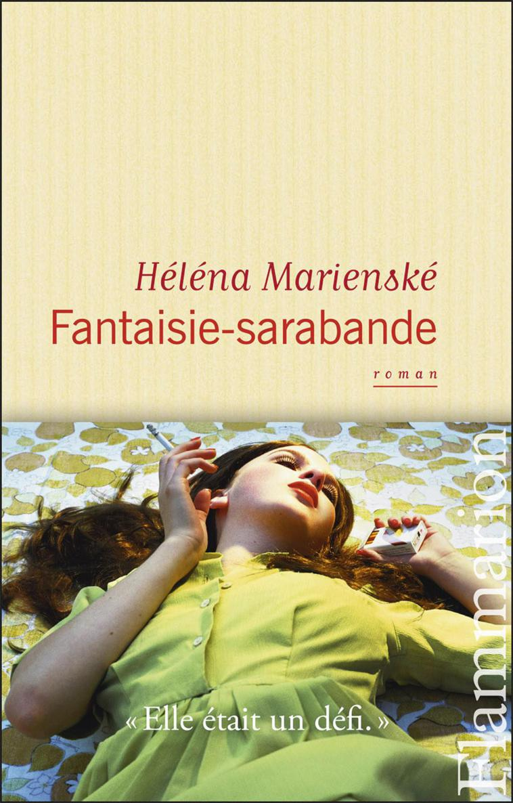
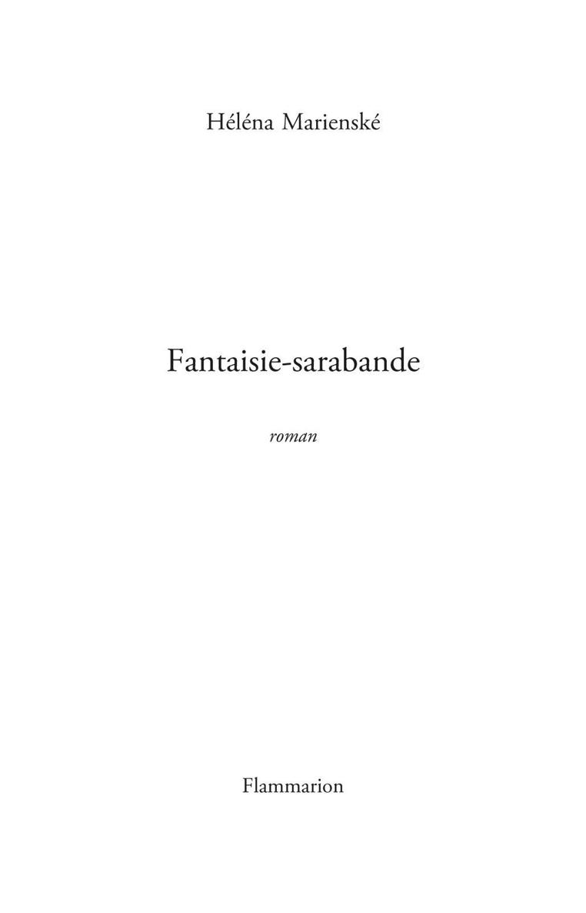

Marienské Héléna
Fantaisie-sarabande
Flammarion
Maison d’édition : éditions FLAMMARION
© Héléna Marienské et Flammarion, 2014. Publié avec l’accord de l’Agence Pierre Astier & Associés.
Dépôt légal : janvier 2014
ISBN numérique : 978-2-0813-3334-5
ISBN du pdf web : 978-2-0813-3335-2
Le livre a été imprimé sous les références :
ISBN : 978-2-0813-1416-0
Ce document numérique a été réalisé par Nord Compo
Présentation de l’éditeur | |
Peut-on supporter d’un mari avare et volage qu’il vous empoisonne la vie ? Non : on le tue. | |
Héléna Marienské est l’auteur de Rhésus (P.O.L., 2006, Prix Lire du meilleur premier roman, Prix Madame Figaro/ Le Grand Véfour, Mention spéciale du Prix Wepler, Prix du 15 minutes plus tard) et, en 2008, d’un recueil de pastiches, Le Degré suprême de la tendresse, aux éditions Héloïse d’Ormesson (Prix Jean-Claude Brialy). | |
DU MÊME AUTEUR
Rhésus, POL, 2006 (Prix Lire du meilleur premier roman, Prix Madame Figaro/Le Grand Véfour, Mention spéciale du prix Wepler, Prix du 15 minutes plus tard).
Le Degré suprême de la tendresse, Héloïse d’Ormesson, 2008 (Prix Jean-Claude Brialy).
Fantaisie-sarabande
Les sociologues s’accordent pour considérer que l’esprit d’initiative, l’indépendance, la volonté de triompher des obstacles, la combativité économique, la mobilité géographique, la multiplicité des conquêtes amoureuses, la capacité à prendre des risques physiques et psychiques, l’efficacité, l’adaptabilité et la rapidité confèrent à l’homme de notre temps comme des siècles passés prestige, charme, et respectabilité.
Prenons maintenant une pute.
Est-elle dépourvue des qualités que nous venons d’énumérer ? Aucunement : elle les cumule à l’inverse, car elles sont les conditions sine qua non de sa survie économique. Et pourtant, les putes, sauf exception, n’acquièrent que peu de prestige, et aucune respectabilité.
Quant au charme, c’est une autre affaire.
Annabelle Mansuy ratait le car qui la conduisait au lycée de Metz une fois sur deux. L’autostop s’imposa.
Des messieurs la cueillirent ainsi sur le bord de la route après le virage de Freyming-Merlebach. Dès qu’elle s’asseyait, ils causaient, la questionnaient, et très vite se racontaient.
Son parleur préféré était Pimpon, chômeur qui devait son sobriquet aux brusques rougeurs qui accusaient ses émotions. C’était un benêt doctrineur si obtus qu’il semblait sorti d’une comédie. Les platitudes inspirées qu’il énonçait dans sa 205, sentencieux comme un dottore, la faisaient rire tout haut. Il comprit qu’elle se moquait : il devint amoureux. Chaque soir, il patientait jusqu’à la fin des cours pour la reconduire chez elle. Il préférait souvent les chemins de traverse et s’arrêtait sur un bas-côté pour lui faire des déclarations :
— Tu m’excites. Tu me mets en feu.
Pour préciser sa pensée, il s’emparait de sa main, qu’il imposait religieusement sur son pantalon, et la fixait avec des regards infinis.
— Impossible.
— Impossible n’est pas français, affirmait-il en dégrafant sa braguette.
— Je me garde pour Fred.
Fred était sa meilleure amie, sa seule amie. Ses caresses étaient si délicieuses qu’elle lui avait juré fidélité.
— Mais Fred ne compte pas, c’est une fille.
— Pimpon, t’es trop con.
— Si tu veux, tu resteras vierge. On n’est pas obligés de toucher au sacré.
Un système de troc se mit en place : il lui apprendrait à conduire, et elle le laisserait se faire plaisir. La leçon d’abord, et si elle était satisfaite elle le récompenserait. Ils étaient convenus qu’une demi-heure d’effort serait suivie d’un quart d’heure de réconfort.
— T’as le sens des affaires, nota Pimpon.
Elle prit ça pour un compliment.
— Et tu sais quoi, ça m’excite.
Elle apprit ainsi les bases, on met le contact, rétro arrière, rétro à gauche, on débraie, on passe en première, et c’est parti. Il était écarlate dès le début de la leçon, et elle lui suggérait « respire, mon grand, respire, sinon on n’ira pas loin ». Il haletait comme un faune. « Pimpon, si tu ne te concentres pas, on arrête tout. » Il inspirait profondément, rangeait ses mains sur les cuisses et se composait un air de professeur sage. Elle quittait les petits chemins et glissait sur les voies rapides. Pimpon, extasié, observait ses gestes assurés et la laissait se griser de vitesse… pendant vingt-huit minutes. Alors, intraitable :
— Tu prends la première sortie.
— Pimpon, s’il te plaît…
— Dans cinq cents mètres.
— Mon Pimpounet…
— Rien du tout.
Et ils quittaient son paradis d’asphalte.
À l’issue de la première leçon, Pimpon la fit rouler sur une piste sableuse, le long du fleuve, et lui demanda d’arrêter le moteur.
— Tu as droit aux seins, lui dit-elle, car elle avait remarqué qu’il bégayait plus lorsqu’elle était décolletée. Ce jour-là, elle avait boutonné jusqu’au cou un chemisier fleuri. Pimpon s’empourpra. Elle lui tendit crânement sa gorge. Il l’effleura à travers l’étoffe. Ses mains semblaient, en tremblant un peu, chercher le contour du sein, puis sa pointe. Il détacha un à un les boutons, lentement. Elle croisa les mains sur l’appuie-tête, dans un geste d’attente indifférente. Souffle court, il ouvrit largement son corsage : elle était nue jusqu’à la taille. Il bredouilla un amphigouri de compliments et caressa, parfois doux, parfois brusque. Il embrassa, lécha le bout du sein puis le sein tout entier, à grands coups de langue surprenants, pris d’une fougue de bête. Il la mordilla, puis la mordit tout à fait, très fort. Elle accepta ces barbaries, se taisant toujours, et les gémissements de Pimpon provoquèrent dans son ventre une émotion jamais ressentie.
La fois suivante, elle put rouler à son goût, trop vite et violant toutes les règles. Elle se prit à faire la course avec les rivales les plus puissantes, criant sa joie d’enfant affolée par sa liberté. Autour d’elle rutilaient des bolides. Elle doubla une Audi par la droite. Pimpon afficha un grand calme et se contenta de lui indiquer d’une voix neutre la fin de la leçon.
— Aujourd’hui, les fesses. Tu fais ce que tu veux, mais tu n’entres pas. Et devant, pas touche.
Pimpon hocha une tête rubiconde, releva d’un coup la jupe. Elle était nue jusqu’à la taille. Il tenta d’étouffer un cri, en vain. Fermant les yeux après les avoir levés au ciel, car elle était cruelle alors, elle s’allongea à plat ventre sur les deux sièges avant, les fesses sur ses genoux offertes à son regard et à ses mains, les jambes un peu entrouvertes. Cinq minutes au moins, sur les quinze qui lui étaient imparties, s’écoulèrent sans un mot ni un geste. Elle n’était peut-être pas à son goût, de ce côté-là ? Mais soudain il s’empara du paquet, et follement, goulûment, embrassa, pétrit, griffa, fessa. Elle resta de marbre – ou plutôt le feignit. Il reprit les actions dans le désordre, plus sauvagement, la faisant voguer sur son ventre qui s’animait, baisant, mordant, faisant claquer de plus en plus fort le plat de ses deux mains, écartant ses fesses comme pour dissocier les deux demi-globes d’un abricot. Souffle coupé, elle dissimula son visage dans ses cheveux. Il s’interrompit, humecta ses doigts de salive, et caressa le trou secret, qui aussitôt se contracta. D’une claque sur le flanc il la força à se remettre à genoux et reprit les caresses circulaires et très lentes, obscènes et délicieuses. Jamais il ne pénétra ne fût-ce que du doigt l’accès qui lui avait été interdit. On ne sait lequel des deux fut le plus puni.
La dernière leçon fut silencieuse. La route, les bolides, tout indifférait Annabelle. Par fierté, elle tint la demi-heure réglementaire, puis demanda où garer la 205 :
— Choisis, murmura Pimpon avec un drôle de sourire.
Dans la clairière, il attendit à son accoutumée ses indications. Elle restait muette.
— Elle veut quoi, la princesse ?
— Tout, Pimpon. Ce que tu as déjà fait, et le reste.
Et Pimpon, Pimpon qu’elle avait cru si sot, développa à nouveau la thèse (le haut), l’antithèse (le bas), et aboutit à une synthèse qui lui enseigna dans un même mouvement la dialectique, le baiser des hommes, la tendresse, l’audace, l’abandon, les odeurs étranges du mâle et les paradoxes du plaisir.
Une femme marche d’un pas vif, boulevard Voltaire. Elle regarde droit devant, ne voit rien des flâneurs du dimanche qui s’attardent dans le soir qui tombe. Le ciel d’hiver est rose, strié de nappes violettes, il chatoie de reflets sombres, mais ce cliché non plus, elle ne le voit guère, ni que Paris a paresseusement conservé, éteintes, obsolètes, les guirlandes de Noël, silencieuses comme le souvenir du tapage. Murée dans ses pensées, oublieuse des fêtes qui ne l’ont pas réjouie, sans un regard pour les boutiques de vêtements qui habituellement aimantent son œil, elle fait glisser derrière elle une valise à roulettes, une fort grosse valise de bonne marque, apparemment neuve – cuir sombre. Le personnage s’arrête : Angèle Guillometaz redresse d’un geste mécanique son bagage, un vaste Vuitton authentique, qui reste ainsi, à sa droite, vertical et pesant. Puis elle lance, énergique, son bras gauche légèrement vers le haut, replie d’un mouvement délié l’avant-bras, regarde l’heure à son poignet.
Elle se hâte, glisse au passage, de sa main gantée de cuir, une enveloppe dans une boîte aux lettres jaune et se retrouve quelques minutes plus tard, en nage, sur le quai de la gare de Lyon, où le train de Clermont partira dans un quart d’heure. Elle entend là quelqu’un qui l’appelle de son nom d’écrivain :
— Gabrielle Lazné !?
C’est un romancier américain, dont elle a un peu oublié le nom, quelque chose comme Dick Horny. Elle a naguère passé trois jours avec lui ainsi qu’avec une quinzaine d’autres écrivains du monde entier dans un château tout blanc posé sur un parc allemand entouré d’une campagne inexorablement plate, à Kiel. Baltique, prés clairs, prés sans fin, charcuterie à tous les repas, bière tiède. Un machin type « Assises mondiales du roman global » qui consistait comme souvent à enfermer dans une cage dorée quinze ego littéraires gonflés de particularismes exacerbés, mal masqués par un universalisme de façade, et de les stimuler de diverses façons, de les faire causer, exposer, ferrailler, pour voir ce qui allait se produire. Angèle-Gabrielle s’était ennuyée, comme souvent dans ce genre d’occasion.
Elle se souvient vaguement s’être distraite avec Nick. Il parlait un français châtié et lui avait paru plutôt intelligent, pour un Américain. Angèle, un soir, avait tenté de le battre au poker en usant de sa botte secrète : son pied voilé de soie noire s’insinuait, au mépris des règles de Vegas, sous la table, dans son entrejambe pour, à travers l’étoffe du pantalon, lui masser la queue. Mais le schnaps coulait alors trop dru pour qu’elle garde aujourd’hui un souvenir précis de la suite. Qui a bien pu gagner ? Ont-ils ? N’ont-ils pas ?
Pour éviter la dangereuse blessure d’amour-propre que lui infligerait à coup sûr l’oubli de son prénom, elle répond :
— Salut cow-boy ! Où allez-vous sans stetson ni éperons ?
— Clermont, pour une signature. Et ensuite, cap sur Lyon, la meilleure gastronomie de France… Mon éditeur m’a prévu un parcours épatant. Je vous aide ?
Angèle, sans façon, le laisse s’emparer de son élégante valise, qu’il parvient à grand-peine à hisser dans le wagon en poussant divers jurons yankees, Bloody Hell et Fucking kills me – excuse my french. Le supposant curieux des expressions françaises, elle lui apprend que dans la langue de Molière sa valise pèse un âne mort – dead ass. On rit. L’un et l’autre s’épongent et s’assoient face à face, attendant le départ du Paris-Clermont.
L’Américain pose avec soin à côté de lui une étrange petite mallette rigide. Angèle, se sentant obligée à quelques politesses :
— Je ne savais pas que vous étiez en promo pour la rentrée de janvier ?
— Oui, mon petit traducteur vient de finir de s’occuper de mon dernier roman noir, Hot blood and sausages. Ils n’ont rien trouvé de mieux que de traduire le titre par À la recherche du sang perdu ! Les cons ! Est-ce que j’ai vraiment l’air d’un petit Marcel du polar ?
Qu’importe, Dick Horny vient tout juste de toucher ses droits, âprement négociés par son agent. Il a gentiment braqué son aimable éditeur français. Les quelques journalistes télé qui comptent lui font les yeux doux. Tout va bien…
D. H. arrive de New York, et accorde en toute simplicité et avec une assurance sans faille une série d’interviews, avec une scénographie réglée : les présentateurs, souvent sur le bord de leur chaise, parfois même quasiment à genoux en une posture d’oblation, se fendent de questions en anglais avec un accent qui trahit leur statut de provinciaux des lettres globalisées, et une voix off concentrée fait la traduction des réponses du maître du roman américain. Lui, pendant ce temps, reste immobile face caméra en laissant admirer ses yeux clairs vaguement narquois, sa belle gueule qui en a vu d’autres. Il fait parcimonieusement résonner des propos qui tranchent.
Chacun connaît le roman avec lequel il est entré en littérature, et dont le caractère fictionnel est régulièrement remis en cause, sans preuves il est vrai : Zach Horby, le jeune héros, un New-Yorkais, étudiant comme le fut Horny à Columbia grâce à l’héritage coquet légué par son père mort prématurément, croise, lors d’une errance dans le Bronx, où il enquête pour la documentation de son premier roman, un SDF qui est le parfait sosie de son père et qui le dévisage d’un air hostile en passant son chemin. L’homme agite ses hardes, profère des insanités mêlées de vagues menaces. Pris de peur, l’étudiant ne se déplace plus qu’armé et accompagné, mais ce SDF fantôme de son père revient hanter Zach dans ses lieux, chie dans son couloir, le houspille à grands cris dans la rue, jusqu’à s’installer un jour dans l’amphithéâtre où il fait un exposé et y faire un esclandre alcoolisé. Après une enquête familiale, Zach découvre que son père lui avait caché la regrettable existence d’un frère jumeau, dit « Ted l’infâme », avec qui il entretenait des relations détestables et qui s’était mis au ban de la famille, disparaissant littéralement pour une vie de Bukowski asocial, provocateur, poivrot, obscène et désespéré, mais sans aucun talent littéraire et affligé de penchants parasites.
Un soir après les cours, dans le labyrinthe de la ville-monde, l’oncle Ted barre ostensiblement la route de Zach et lui tend la main d’un air mauvais. Le héros lui fait l’aumône de plusieurs dollars. Il n’y est pas du tout : l’oncle réclame plus, beaucoup plus. Sa part des biens de la famille, dont il dit avoir été honteusement spolié. Violent, il tente, d’une lame de rasoir brutalement sortie de sa poche, d’égorger Zach qui résiste. L’étudiant réunit alors une partie de la somme, juste ce qu’il peut extraire de ses comptes pour ne pas mettre en péril ses études, et la donne à un autre SDF, pour qu’il assassine le frère jumeau de son père et fasse disparaître son corps dans l’Hudson. Le titre français du roman est Sans chair fixe, et aucune interview ne peut se faire sans que l’histoire semi-légendaire qui intronisa Horny ne soit finement rappelée, ni que l’intéressé ne tienne à son sujet des propos ambivalents sur le partage de la réalité et de la fiction, le thème universel de la mort du père et la toute-puissance imaginaire de la ville debout.
L’ambiguïté plaît.
Vient alors la question qu’Angèle craignait depuis le départ. Où en sont ses projets ? Qu’a-t-elle écrit depuis la dernière fois ? Ce n’était pas mal du tout, ce qu’elle avait pondu. Un peu tarabiscoté, mais couillu.
Le train part.
La réponse d’Angèle se fait attendre. Dick, dans un sourire d’encouragement, ouvre la mallette à côté de lui. Sont disposés, bien calés dans une feutrine rouge, un château-haut-brion d’un bon millésime, deux verres de dégustation, un tire-bouchon et une tablette de chocolat Valrhona.
— À-valoir de mon éditeur pour mon prochain livre ! glisse-t-il avec un clin d’œil à Angèle, qui ne peut s’empêcher de songer que le prix du kit sybaritique dépasse probablement les émoluments du traducteur – pensée interrompue par un beuglement américano-gargantuesque :
— La France, c’est pour le plaisiiiir !
Encouragée par le haut-brion, sentant qu’elle n’a plus grand-chose à perdre, Angèle se laisse alors aller à une confession : c’est la panne sèche, Dick, le trou noir. Rien ne marche. Vie à l’arrêt. Elle dort, beaucoup, elle mange, trop, elle continue à vivre et à écrire malgré la certitude de n’être plus qu’un rat de laboratoire déjà cancéreux qu’un chercheur insouciant (ou sadique ?) aurait oublié dans son inutile labyrinthe. Les mots sonnent faux, les phrases tournent en rond, les personnages sont des fantoches, le style d’une platitude à se taper la tête contre du béton : tout ce qu’elle ébauche est d’une médiocrité à pleurer.
— Tu sais ce que j’écris dans mes fameux carnets en moleskine, en ce moment ? Des listes.
— D’idées ?
— De fringues à acheter. Ça me calme.
Dick lève une épaule, hoche la tête et propose : bois un coup, poupée.
Ce qu’elle fait. Puis : Je piétine, je m’entête, je renonce, je perds la raison, je tente d’oublier ma déchéance dans le stupre, mais tu sais ce que c’est. Je suis morte. Over. Gabrielle Lazné n’existe plus. Il n’y a plus qu’Angèle Guillometaz, petite prof de lettres sans vocation ni talent pédagogique coincée à Millau, ville plus connue pour faire moisir ses roqueforts à l’ombre d’un pont à bagnoles et pour avoir lancé les attentats bovesques au MacDo que pour son apport littéraire. Plus rien qu’Angèle Guillometaz, la femme de son vieux de mari dont elle subit la célébrité pianistique en public, les frasques, la pingrerie et les manies anticonsuméristes en privé.
Dick approuve d’un fucking something et la ressert tout en la sermonnant, en évangéliste yankee capable de temps à autre de quelques psaumes entraînants et bien rythmés :
— C’est typique ! Vous autres profonds Européens pétris de catholicisme, vous êtes fichus pour la littérature ! Incapables, petits chéris, incapables que vous êtes de vous libérer du poids de votre tradition. Trop de génies vous écrasent avant que vous ayez allumé votre mac, ils vous plaquent au sol, ils vous arrachent les tripes avec les dents, tous les Montaigne, les La Fontaine, les Molière, les Balzac, les Baudelaire, les Rimbaud. Et les Flaubert… « Écrire sur rien »… Vous êtes tétanisés, poor you… Vous devriez faire comme nous, hommes nouveaux du nouveau monde, story tellers… Écrire de vraies histoires bigger than life, avec des personnages, une intrigue, du rythme, de l’amour, du cul. Une vision du monde. Des valeurs. Ou des contre-valeurs. Au lieu de quoi… Vous faites des mines, vous vous regardez écrire, vous ne pensez pas une seconde à votre lecteur. Pauvres choux ! Vous ne pouvez pas faire tourner une petite cuiller dans une tasse de thé à un de vos personnages sans consistance sans vous demander comment et dans quel sens Proust l’aurait fait avant vous, pas vrai ?
Angèle, silencieuse enfin, hoche la tête. Cause toujours…
— Et ce qu’auraient écrit Stendhal et Céline à votre place, et comment dépasser les interdits du Nouveau Roman… Ah là là, ça vous a achevés, l’ère du soupçon. Et vous tournicotez, vous demandant, aussi bien que Roland Barthes, comment ne pas écrire le roman qu’on a toujours eu l’ambition d’écrire.
Elle regarde sa bouche. Ce type ne comprend rien à la littérature, il écrit de la daube, mais il est assez sexy, avec son arrogance.
— Arrête de pleurnicher, libère-toi ma petite, surtout écris chaque jour : cinq pages, rien de moins ! Bosse nom de dieu, be professional, et vis, voyage, baise, tue… enfin tu vois ce que je veux dire.
Et en plus des yeux intéressants, assez dissymétriques.
— Tiens, je suis prêt à parier cent dollars que dans cette sacrée valise qui pèse comme tu le dis un âne, il y a essentiellement des bouquins, des kilos de bouquins qui te suivent partout ! Et pas un seul page turner…
Angèle se penche alors vers lui pour lui répondre à mi-voix avec un fin sourire :
— Si tu savais…
— Tu es une femme rangée, Gabrielle. Eh bien, libère-toi : écris l’histoire d’une femme délivrée de toutes les conventions sociales. L’histoire… tiens, l’histoire d’une pute. Une pute, tu m’entends. Et que la pute, ce soit toi. Et ensuite, fais-toi payer, cher !
Arrivée en gare de Clermont. Déjà ? On s’embrasse, on se promet de se retrouver à New York, pour fêter la traduction du prochain chef-d’œuvre de Gabrielle Lazné.
Sitôt sortie du train, Angèle appelle le 06 83 14 39 40 : personne ne répond, elle ne laisse pas de message.
Elle attend sa correspondance à Clermont pendant trois quarts d’heure et dans le froid. Son portable vibre, le nom de Grontec s’affiche : elle ne répond pas. Vingt-cinq minutes d’attente ensuite en gare de Neussargues. Il est deux heures trente lorsqu’elle arrive à Millau. Ces voyages en train sont peu coûteux mais décidément bien longs. Dix minutes de voiture, plein phares, jusqu’à Bazeuges-sur-Cirq. Il y fait vraiment beaucoup plus froid qu’à Paris, il neige encore, il neige toujours, il neige épais, et si elle veut passer aux toilettes, c’est dehors, dans la baraque construite à cet usage. Depuis cinq ans maintenant, les toilettes, à la demande de Monsieur, très soucieux de l’environnement, sont des toilettes sèches. Pas de chasse d’eau. Pas de gaspillage. Le moins de dépenses possible. Toute une philosophie.
La philosophie dans les latrines, où elle pisse des stalactites, elle commence à s’en lasser, notez.
Heureusement Nathalie, que nous appellerons Nat, a bien chauffé la maison.
Angèle pousse la porte sans la fermer à clef, oublie sa pesante valise dans la vaste entrée, devant l’ottomane en chintz rose où repose Juno qui miaule pour la forme, compose à nouveau le 06 83 14 39 40, tombe sur le répondeur, laisse un message rassurant, tout va bien, le voyage s’est bien passé, dors bien mon chéri. Puis jette à la poubelle, après un bref examen rêveur, la dent glissée dans la poche de son manteau, la dent fugueuse, la dent frondeuse, la dent du concertiste déconcerté – une incisive visiblement postiche, assez jaune, dent récupérée elle ne sait pourquoi, au dernier moment, dans un mouvement réflexe sans doute et qui se trouve accompagnée d’une minuscule cocotte dorée en fausse porcelaine, le tout un peu dégoûtant. Jetons aussi la cocotte.
Elle se fait couler un bain extrêmement chaud. Ouvre un carnet en moleskine, noir et neuf. Sort son stylo, le dévisse pensivement. Observe la page vierge. Une histoire de pute, vraiment ? Son cœur bat en chamade. Enfin ? Ça revient, c’est là ? Non, trop tôt. Un whisky plutôt, et au lit.
Elle ne souriait pas, elle ne regardait pas, elle allait.
Dix-sept ans : un prodige qui alliait la pureté d’une Vénus jaillie des flots aux promesses de tous les sabbats : elle faisait son effet. Sous l’œil ardent des devantures, déjà consciente des privilèges exorbitants que confère la beauté, déjà soucieuse de la fugacité des féeries jouvencelles, Annabelle Mansuy avançait légère vers ailleurs, délicate, pressée, imprévue. Un rayon lui dorait l’épaule, une brise moussait dans ses boucles, découvrait dans une apothéose sa nuque d’enfant. L’amble déliait sa taille. Alors qu’elle cheminait, fière, absente, le monde prenait un tour particulier : elle sentait, caressant peau et pores, une sorte de halo magnétique, comme si la condensation des regards, regards alentis, regards désirants des hommes, regards étonnés, regards émus parfois des femmes, avait modifié la composition de l’air, lui donnant une luminosité, une odeur, une densité inédite. Elle avait une audace, elle était un défi. L’air vibrait d’un soubresaut étrange. Les mâles tressaillaient, sifflaient, commentaient, puis se taisaient, pensifs. Des rêves de plaisir, de chairs mêlées, d’orgies sales, de vice joyeux, de galanterie aussi leur venaient. Son avenir était tout tracé. Combien coûterait-elle ?
L’adversité, ce matin, a un prénom : Gérard. Fanny et Loïc vaquent en ville toute la journée, personne ne passera d’aventure dans le hameau, Ricou ne vient saluer ses chèvres que le matin très tôt et le soir lorsque tombe la nuit, la paix des pâtis semés d’animaux est assurée.
Bazeuges serait on ne peut plus calme, n’était Gérard.
Gérard est à la retraite. Il n’a guère plus de cinquante ans, cet homme, mais un tel miracle survient lorsqu’on a été caporal-chef et que lassé des quolibets de la troupe on a souhaité fuir, loin. On entend souvent dans sa masure bombiner une radio. Le corps noir et lourd, fort droit, se silhouette souvent sur les chemins alentours, vapeur du souffle aux dents. Il n’est donc pas improbable que Gérard, tout à sa délicieuse oisiveté de jeune retraité, aujourd’hui se promène malgré le froid, traînaille, lambine, s’occupe outdoor.
Son jardin jouxte celui d’Angèle, qui a justement prévu d’y travailler, d’y travailler tranquille.
Elle pense à Gérard le gêneur, puis aussitôt à Louis, elle pense au dernier concert de Louis Guillometaz, fier comme un roi blanc, cinq rappels, standing ovation, elle pense à Paris où elle veut vivre désormais, et dans l’opulence, et seule enfin, rien ne s’y opposera plus, pense à Millau et à ce monde perdu et vaincu qu’elle veut fuir, pense à ses cours qui vont encore dévorer sa journée et l’accabler de migraine. Elle pense à ces corsets, mariage, province, enseignement alimentaire, à ces fades servitudes. Elle pense à Nick qui l’a prise pour une bourgeoise coincée : et rit.
Il est tôt, elle n’a cours qu’à quatorze heures. Elle savoure son petit déjeuner comme toujours : lentement. Puis jette un œil sur les cours de l’après-midi. On improvisera, comme souvent.
La valise. La très lourde valise… Elle l’a presque oubliée depuis hier soir.
Elle enfile ses bottes Aigle, va faire un tour au potager. L’hiver ici fige tout, même l’air, même l’eau qui l’été s’écoule le long du jardinet, jusqu’au lavoir vieux. Elle descend au bas du terrain, longe le cabanon sans ses feuilles de vigne vierge, laisse à sa gauche les dix rangées de framboisiers, et derrière le dernier noyer atteint le carré de compost. Accoté au chêne nu qui marque la frontière entre le potager d’Angèle et celui de Loïc, on trouve comme on le craignait Gérard, avec son habituel air farineux et désinvolte, son fameux air de tête à baffes, Gérard qui sourit finement, qui fait l’ange, qui fait la bête. Il salue, coup de casquette abaissée aussitôt que levée. Main velue. D’un bref mouvement de tête vers le compost, il livre au regard d’Angèle son profil de nasique, tente un échange météorologique, s’éloigne enfin en sifflotant, faux, un air de Carmen. Et si je t’aime, prends garde à toi.
D’une fourche abandonnée sur le tronc du noyer violet, Angèle taille comme avec une lance guerrière des rectangles de compost, huit, bien réguliers. Le sol, pris, casse comme glace. Elle entreprend ensuite d’extraire ce pavage de son enclos de bois à claire-voie – opération délicate, mais réglée en quinze minutes. Le sol au-dessous est beaucoup plus meuble que prévu. Elle creuse, fouit, évide autant qu’elle peut. À côté du compost se trouve ainsi, une demi-heure plus tard, un tas vaguement pyramidal de près d’un mètre de haut.
Elle rejoint ensuite la villa, toits bleuâtres et portes blanches, en passant par le bas. Indétectable donc. Elle chasse Juno dehors, pose à plat dans l’entrée trois sacs-poubelles de cent litres qui forment un éphémère tapis gris de deux mètres carrés, ouvre la valise, sort les avant-bras, la cuisse droite, le côté droit puis le côté gauche du torse parsemé de poils pâlis et strié de coups de fouet, le pied droit, et voici la tête salement amochée, sang craché, grand front studieux cabossé, yeux bleus exorbités qui sans regard la regardent, joues tuméfiées presque arrachées, rire macabre des lèvres ouvertes sur une dentition lacunaire, langue violacée sortie de la bouche. La fossette du menton, si jolie, a disparu, remplie de glaires virides. Puis les deux mains, importantes les mains, car Angèle a l’idée qu’elles peuvent toujours faire de l’usage. L’index droit, notons-nous, est malpropre, comme gainé d’une épaisse poussière. On continue, la cuisse gauche, les deux bras, les mollets et merde, il manque un pied.
Elle retourne la valise dans tous les sens.
Rien.
Elle pousse un cri rauque, qu’elle étouffe de ses deux mains. Pourpre, elle tente de ne pas s’égarer, d’agir méthodiquement ; descend dans la salle de bains où elle gobe trois Tranxène de vingt milligrammes, remonte examiner le mystère. Ignore la puanteur cruelle, fouille, jure, envoie valser de droite et de gauche demi-membres, tête et mains, et finit par trouver, sous le torse gauche, un peu enfoncé dans l’abdomen et ses entrailles, le pied farceur.
Fausse peur.
Elle descend dans la cour, où le thermomètre affiche moins dix, parlez-lui de réchauffement climatique, laissez-la rire : à Millau, le 3 janvier, on n’est toujours pas réchauffé. On la voit qui cale la brouette devant l’escalier, y couche la moitié des morceaux, recouvre le paquet de quelques pelletées de feuilles de kiwis et de charmes mêlés gardés de l’automne dernier, et règle ainsi l’opération en deux allers-retours. Le corps, après avoir été convenablement tassé à coups de masse, est sans aucune protestation recouvert d’une couche de feuilles, puis d’une couche de compost, puis d’une couche de litière émanant des toilettes sèches si chères au cœur du défunt Louis, encore une couche de feuilles, encore du Louis, encore de la merde, et des feuilles encore, étrange feuilletage, trouble alchimie des déchets, mais il n’y paraît rien. Nous voilà riches d’un bon gros tas compostable prêt à amender le jardin au printemps prochain, tas sur lequel elle disperse deux entiers paquets d’activateur à compost, qu’elle arrose généreusement d’eau chaude selon les recommandations de la notice, ne négligeons aucun détail. La terre restante est étalée en haut du potager, sur le carré où poussèrent des plants de tomates par belles dizaines, là où vibrionnaient l’été dernier des mouches éclatantes. Angèle y incorpore deux sacs d’or brun, observe d’un regard circulaire et satisfait le ravissant jardin terrassé, remonte chez elle, ah oui, les mains : de belles mains, longues, talentueuses, jointures puissantes de virtuose. Rougies de sang séché, malpropres. La droite est figée dans un geste de préhension, refermée sur un stylo-encre Montblanc surdimensionné. Elle dégage sans hâte l’objet, puis entreprend de décrasser les deux mains à l’aide d’une brosse à linge. Elle les case ensuite dans le compartiment supérieur du réfrigérateur, fonction congélateur, non sans les avoir au préalable logées dans un tupper (Nathalie fait le ménage cet après-midi et, avec la formidable, l’ébouriffante énergie qu’elle déploie, elle serait bien capable de s’attaquer à la cuisine, de la vider entièrement, placards, étagères et frigo compris – autant choisir un contenant opaque).
Elle glisse l’objet derrière les galettes de millet aux poireaux, entre le gratin de blettes bio et la purée de légumes de saison, se douche longuement, se débarrasse de l’odeur âcre et puissante du cadavre, s’habille plutôt chic, urbaine, se maquille d’une touche de mascara, compose le 06 83 14 39 40, tombe sur le répondeur, laisse un message affectueux, appelle-moi dès que tu en as envie.
Légèrement sonnée par les Tranxène, à peine en retard, Angèle Guillometaz se rend au lycée polyvalent du Haut-Languedoc.
Annabelle Mansuy, enfant, est une reine. Elle dispose d’un royaume dont les sujets de camelote semblent sortis d’une cour des miracles. Elle est belle et souveraine. Cela seul compte. Lorsqu’elle parle de sa voix flûtée, on se tait, on l’écoute. Mais elle parle peu.
Elle ne claironne pas, sa majesté : connaître son statut supérieur suffit à la combler. Son royaume, pour l’instant de modestes dimensions, verra plus tard ses frontières étendues. Des troupes seront nécessaires. Sur son destrier armorié, dont la poitrine et les flancs auront été bardés de fer, à la tête de son armée, elle conduira, l’épée au clair, des conquêtes néonapoléoniennes. Il n’y aura pas de Waterloo car ses hommes, gagnés par la grâce qui la touche, ses nombreuses et vaillantes troupes jamais ne faibliront. Nombre de ses soldats périront, et le camp adverse subira des revers cuisants. Parfois, elle descendra de sa monture pour baiser les plaies d’un écuyer tombé à terre, entrailles ouvertes. Il se relèvera, criera au miracle, l’armée acclamera la jeune et sainte reine, et l’Adversaire, fragments d’armée en déroute, fuira en hordes débandées, poussant des hurlements d’épouvante qui déjà la font sourire.
N’imaginons pas une reine à diadème, mais une reine à sceptre. De tenues soyeuses, chatoyantes ou pigeonnantes, point. Rien à voir avec ces reines à évanouissements et flacons de sels, avec les ridicules reines pour fillettes à poupées. Elle montera à cru sur son cheval et se tranchera un sein pour caler son carquois.
Annabelle surprend : d’un mot, d’une idée qui fuse de son museau rieur. C’est un numéro, cette enfant, pas la petite-fille du Lug pour rien. Certains la surnomment la Brindille, d’autres la Licorne. D’autres encore ont compris qui elle était et murmurent, avec un sourire ému, « notre petite reine ». Blonde, l’œil bleu, haute pour son âge et robuste malgré la silhouette menue. Une authentique descendante de Vikings de l’invasion northmande. Une Aryenne, une vraie.
On avait entrepris chez les Mansuy de sauver la France de la décadence mortelle dans laquelle les Salauds d’En Haut l’avait plongée. Tous les comploteurs youpins, francs-macs, bolcheviques : même vile engeance ! On les aurait. La famille, élargie à quelques hurluberlus, formait un petit réseau uni de résistance à l’infamie, groupuscule bigarré dont son grand-père paternel était le patriarche, le cerveau, le nautonier.
Papy-la-Tresse, dit Lug, grand et gueulard comme un Hun, musclé de très vieux muscles que les ans avaient rongés et pétris, tatoué de signes cabalistiques et décolorés, possédait un chenil tout au bout du village. S’y ébattaient des pitbulls, des boerbulls, des staffordshire bull terriers et quelques rottweilers, ménagerie glapissante sur laquelle il régnait aussi et dont il faisait clandestin commerce.
Il avait autorisé son fils Clovis, le père d’Annabelle, anciennement contremaître à Longwy et désormais chômeur, père à la mine défaite et cabossée, boursouflée de bière, à aménager ses appartements au fond du jardin, derrière les cabanons des bêtes, dans une vaste remise en parpaings. Logement sans fenêtres ou presque, dont on ignore quand, pourquoi et comment il fut construit, le blockhaus était constitué de plusieurs pièces en enfilade et coiffé de tôles ondulées scellées au mortier. À l’intérieur, sous le fibrociment, le mobilier de dépôt-vente se détachait à peine sur les murs tapissés d’ombre.
Les bicoques en parpaings bruts servaient aussi bien de brocante, de remise, que d’habitation, et érigeaient comme une frontière ultime, au fin fond de la Lorraine, avant la Sarre, le Wurtemberg et la Bavière.
Pas de latrines, on allait dehors.
Annabelle s’y trouvait bien tranquille : au-delà, des friches, loin du monde. C’était alors son château. Le prochain, plus grand, serait aussi plus aéré.
Le Papy aimait le chant du cor et les musiques martiales, qui le faisaient bander, avouait-il en riant. Il était bavard, généreux, un peu poète, un peu sorcier. Un fou, un illuminé gentil comme tout. Mais enfin, délirant, vous concède aujourd’hui Annabelle. Il l’est toujours, au reste. La petite devenue grande a bien tenté de le raisonner… De lui ouvrir les yeux et l’esprit. De l’atténuer, de l’euphémiser. À d’autres ! Aujourd’hui encore il est toujours gaillard, que dis-je ? Fort et fier. Tais-toi, Petiote. Nous sauverons la France, crois-moi. On les laissera point faire, tes comploteurs parigots.
Il parlait par aphorismes dont les mots simples, limpides et profonds allaient droit au cœur et au ventre de ceux qui l’entouraient, et ils étaient nombreux. Il racontait souvent l’Algérie, les faits d’armes et de bravoure du capitaine Lug faisant chanter les fells comme des rossignols, le sang tiède qui lui avait coulé sur les mains, comme un baptême, toujours les mêmes histoires dont la parentèle s’amusait tendrement, férocement. On avait de la chance : le Papy avait été un héros.
Clovis adorait les chiens, le pit Merlin et la boerbull Brocéliande, et presque autant son père, qui lui-même idolâtrait Jean-Marie. Tous l’évoquaient par son prénom : c’était un membre de la famille, un peu lointain, un peu flou certes, mais présent. Quel homme ! Audace ! Humour ! De la tripe ! Des couilles ! Il leur en envoyait de belles, aux pétouilleux de gauche et de droite, autant qu’aux margoulins qui s’engraissaient sur le dos des pas vernis. Et le Papy, lepénisé jusqu’à la moelle, entonnait : Tous patrons voyous ! Comploteurs ! Élites décadentes ! Enjuivées ! Enfin quelqu’un qui claironnait tout haut ce que chacun savait tout bas, qui bataillait à la grandeur de la France ! Qu’avait bien compris qu’on ne pouvait pas abandonner la France ! Ah, la Shoah ! Il avait bien raison, Jean-Marie : un détail, largement gonflé. S’ils avaient toujours été persécutés, tous ces juifs, et toujours, et partout, c’est bien peut-être qu’il y avait une raison ? Avec les négros, les bicots, faudrait bien les pogromiser une bonne fois pour toutes, allez ! Qu’ils arrêtent de nous couiner sur le système ! Cohortes ! Pléthores ! Si je m’appelais Lévy, si je m’appelais Mouloud, vous croyez que je vivrais dans les parpaings ? Vous avez-ty vu les Arabes et leurs moukères rutiler en Mercedes ?
Ah, Jean-Marie, quel meneur ! Papy-la-Tresse avait enregistré les discours du bonhomme : les cassettes étaient étiquetées, rangées horizontalement par ordre chronologique. Quand il les passait sur l’antique lecteur, Annabelle s’apercevait qu’elle les connaissait par cœur. Dressée sur la table, un pied en avant, un bras au ciel, elle déclamait. Lug, aux anges, applaudissait : Petiote, tu iras loin, avec ton cerveau et ton minois assorti. Aujourd’hui encore, elle sait les réciter.
Jean-Marie et La Tresse se faisaient une haute idée de la France, et avec eux l’ULPLF, l’Union lorraine pour la France, groupuscule maintes fois dissous et recomposé, dirigé par le Papy. Tous, père, fils, amis, gueules cassées, tous les anciens du réseau Mirabelle, et puis leurs fils ou filleuls, tous sortis des brumes, englués dans l’opaque et le gras de la bonne grosse haine, tous hommes, rêvaient, dans leur arpent des confins où pas un Arabe ne se serait aventuré, où pas un juif ne prospérait, à une France redevenue La France, La France qui avait été un empire et qui n’était plus qu’une province de l’Europe. Partage, ouverture : fariboles ! Ah, qu’on retrouve une France plus française, plus propre, plus France : une France blanche, une France fière.
Fallait un sursaut.
Annabelle ?
En dépit de quelques revers et gardes à vue, car il était sanguin, Lug-la-Tresse ne se laissait pas abattre. Les gens, constatait-il, se rendaient à l’évidence, de plus en plus. Les résultats des élections parlaient tout seuls. Ça grimpait, ça grimpait. Vertigineuse ascension vers les sommets ! Délices surhumaines ! Depuis longtemps déjà des élus locaux prouvaient qu’on ne peut pas éternellement empêcher les gens de voir la vérité en face. En 2002, Annabelle, quinze ans, assistait au miracle : on se retrouvait en finale. Apothéose, ou presque.
Lorsque étaient réunis les amis, qui venaient nombreux au chenil et régulièrement, Lug suivi de Clovis le dauphin conduisait la troupe, à la nuit tombée, dans une forêt dont il connaissait tous les chemins, les à-pics, les détours, les buissons et les arbres. Annabelle, seule fille, suivait sans bruit, mascotte gringalette de cette troupe de virils. Allez, viens, petite reine ! Lug enroulait lentement, religieusement, sa longue natte blanche en un chignon d’improbable mémé tatouée, s’installait avant les agapes au pied d’un frêne puissant avec la dignité sacerdotale d’un antique druide, et récitait de sa belle et ample voix qu’il canalisait dans le cornet de ses mains enroulées autour de la bouche une brève prière que reprenait sourdement la compagnie : « Je me lève en cette nuit dans l’énergie des cieux, éclat de la lune, lumière du soleil, splendeur du feu, vitesse de l’éclair, rapidité du vent, profondeur de la mer, stabilité de la terre, fermeté du roc. » Tous les hommes à sa suite se dressaient, et l’on en venait bientôt aux grands rêves et aux graves bilans. Ils sentaient fort, de la bouche et des pieds. Annabelle se taisait. Elle observait. Elle attendait.
Le soir, pour chasser l’insomnie, elle psalmodiait comme une prière quelques vers appris :
« Je suis fils de la terre noire,
Mais aussi du ciel étoilé :
Ouvrez-moi la porte de gloire ! »
Samedi dernier, comme chaque fois avant le début d’un concert, Louis Guillometaz a été pris de fringale.
Une faim violente, vorace, ravageuse, l’envie d’engouffrer de la bouffe, n’importe quoi ferait l’affaire.
Angèle, évidemment, n’était pas là. Sa femme n’aimait pas le voir transpirer, le sentir puer avant un concert. Ni l’entendre respirer fort, dans une espèce de sifflement horripilant. Elle avait de ces sensibilités. Elle préférait, disait-elle, le garder intact dans son imaginaire, glorieux sur scène, applaudi. Si au moins la petite Annabelle Mansuy avait pu le rejoindre : d’un mot, d’un regard, d’un sourire, d’une pipe, elle l’aurait soulagé. Mais la belle était ailleurs, occupée comme souvent, hélas.
Le Grontec, lui aussi, était introuvable. Parti courtiser alentour. Le Grontec faisait du réseau et n’avait jamais à portée de main le sandwich qui sauve.
Puisque son impresario folâtre, Louis se débrouillera tout seul. Un paquet de biscuits, une barre chocolatée, ça devrait bien se trouver, non ? Il a un bon quart d’heure avant que les lumières s’éteignent. Il attrape son pardessus, les clés de sa Prius et ouvre la porte de sa loge.
Il s’engage dans l’escalier de service quand il bute presque sur la fille de Mme Elbau, la concierge, une petite brune pratiquement pas portugaise. Piquante et bien tournée, ma foi, presque jeune. Il ne lui laisse pas le temps de lui demander un autographe et prononce, comiquement féroce :
— J’ai faim !
— C’est une bonne maladie, remarque la petite, sociable comme tout. Faim de salé ou de sucré ?
— Faim tout court, faim absolument. Trouvez-moi du saucisson, une banane, un reste de choucroute. N’importe quoi qui cale une grande carcasse comme la mienne.
Car Louis Guillometaz est grand, beaucoup plus grand que ne le laissent présager les photos. Lucile repart en riant.
— Vous allez voir…
Lorsque le Louis va jouer, il oublie tout de bon ses légendaires préoccupations écologiques. Ignore que la choucroute n’a pas été fabriquée à Paris, ou dans un rayon de cent kilomètres. Il ne sait plus qu’il est locavore, célèbrement locavore, il ne sait qu’une chose : il a faim.
Il regagne sa loge, toujours affamé comme un ogre sanguinaire.
— Ou bien une assiette de cassoulet froid, murmure-t-il en observant rêveusement dans le miroir rectangulaire son front qui se fronce et se tavelle.
Il rentre le ventre, bien qu’il n’en ait toujours pas besoin, ou si peu. Regarde le plafond, s’adresse à Dieu, le prie de le pardonner pour sa passagère faiblesse et l’assure qu’il n’oublie pas l’essentiel. Puis repense aux nourritures terrestres. Salive à l’idée d’une saucisse fumée accompagnée de lentilles froides. Sourit. Admire son sourire. Célèbre presque autant que ses longues mains, que son doigté. Son public serait-il aussi bien disposé s’il connaissait les agapes grasses et débauchées auxquelles il doit se livrer avant d’interpréter, contenu, inspiré, souverain, altermondialiste, le concerto n° 2 en fa mineur, opus 21 ?
Lucile bientôt reparaît, porteuse d’une assiette à dessert et d’un verre de cidre. Il la gratifie d’un sourire artistique.
— C’est la galette du personnel. Il en est resté trois parts. Régalez-vous.
Et elle s’enfuit, toujours à rire.
Guillometaz va rugir de bonheur quand Le Grontec fait sa tardive apparition, tout enivré de mondanités.
— Mon cher, un monde fou. Tu vas ?
— On fait aller, vieux. Laisse-moi, je me détends, tu veux bien ?
Le Grontec prend des airs navrés, des airs d’amoureux éconduit, c’est sa tendance, mais ces mines chagrines n’empêchent pas notre bougre de lui claquer la porte au nez, sans un mot. La galette est une perfection, frangipane crémeuse, feuilletage léger, caramélisé, croquant. Le pianiste l’attrape à pleines mains, comme une femme. Et il la dévore sans retenue, avec un crescendo dans le plaisir qui le ferait presque trembler.
L’extase se transforme en cauchemar au milieu de la seconde part. Un choc minuscule et sourd, une impression de vide dans la bouche, suivie par une sensation de vertige, d’horreur, d’inconcevable, de calamité. Il est tombé sur la fève, crénom ! Il va devoir se présenter devant le public comme ça, édenté de la dent de devant ! Le sol se dérobe sous ses pieds, littéralement et tellement qu’il tombe à genou, comme un supplicié. L’habit craque.
Du pouce et de l’index, il part à la recherche de la fausse dent, noyée quelque part dans la frangipane. La fève se présente d’abord, comme une mauvaise blague. Une poule, une poulette miniature, en porcelaine de pacotille, ronde et dorée… Il pourrait la jeter, mais il garde tout.
L’incisive retrouvée, il se redresse et chancelle vers le miroir. Il se sourit largement, comme on gratte un prurit, fige la grimace, s’observe longtemps, amoché, troué. Il a envie de pleurer, comme autrefois, enfant. Mais les larmes ne viennent pas. Un rire, plutôt, le secoue. Car il a toujours faim, plus faim que jamais, et à toutes dents ou presque il mord dans la dernière part de galette. Une merveille, happée en deux bouchées.
Rassasié, bouche fermée sur son secret, il s’élance enfin vers l’orchestre, il vole vers son public. La fève dodue, il la glisse dans la poche droite de sa veste, à gauche la dent. Et ce soir-là plus qu’aucun autre, il va dévorer Chopin, savourer Chopin, penser Chopin, libérer Chopin. Il est, pour la dernière fois, Chopin.
L’école devait être l’instrument de la promotion d’Annabelle : on avait de l’ambition pour elle, il lui semblait qu’on n’avait pas tort. Papy Mansuy l’avait mise en garde, ainsi que sa sœur Pauline. Il y aurait à prendre et à laisser. De notoriété publique, l’institution scolaire était devenue un ramassis de bolchos en jupons. La plupart des maîtresses, toutes demoiselles ou cocufiées, et moustachues, avez-vous vu, étaient des rouges ridiculisées, démenties par les faits. Autant Jean-Marie grimpait, autant les ouistitis du Colonel-Fabien s’effondraient, pathétiques crevures. Les lendemains ne chantaient plus. Extinction de voix. Voilà qui rendait ces petites fonctionnaires bien méchantes. Elles erraient, comme tous les afficionados des Soviets, asphyxiées, traumatisées par des scores toujours plus ridicules de leur parti et l’effondrement de leur cocasse idéal.
Communistes ou pas, convenons qu’elles n’appréciaient guère Annabelle, ces dames coincées et, à vrai dire, plutôt de droite modérée ou socialistes bon teint. Peut-être jugeaient-elles gênant que Clovis Mansuy se montrât aussi virulent, distribuant des tracts aux portes de l’école Léon-Blum, clamant dans un silence consterné en fixant les jeunes et rares mahométans qui étaient admis à l’école qu’il fallait, et vite, faire barrage à l’invasion du tiers-monde et rendre aux Français ce qui leur appartenait. Et aux pieds, Merlin.
Les dames regardaient ailleurs. Leur silence enrageait Clovis. Il en rajoutait, donc, et tout se mélangeait : marre des rouges ! marre itou de la francophobie, de Dieu, de Dieu, rien de pire que le racisme anti-Français, ouvrez les yeux, quoi ! Ras-le-bol du dogme d’une société multiculturelle !
Papa aimait le vocabulaire châtié du Chef, qu’il tenait de Lug-la-Tresse. Tous ces mots savants semblaient prendre corps dans sa bouche habituée au silence ou aux onomatopées, exploser soudain et sortir en mitraille autour de lui. Ces dames se caparaçonnaient dans le mutisme, ne levaient même pas les yeux au ciel.
Mépris.
La fille du fasciste reçut plusieurs sobriquets : « le Führer », simple mais évident, amusait beaucoup. Ses colères déchaînèrent une mode : c’était à qui trouverait le surnom le plus infamant. Hitler claquait bien. Anschluss aussi. Et Kommandantur. Il y en eut bien d’autres. Dans les toilettes, on avait écaillé la peinture : son prénom formait le centre d’une manière de soleil dont les rayons étaient des croix gammées. La colère l’enflamma une fois, guère plus. Les larmes brouillèrent sa vue une fois, guère plus. Il fallait prendre sur soi. Les quolibets étaient une épreuve qui allait lui forger le caractère : ce qui ne l’abattrait pas la fortifierait. Elle ignorait donc les rires qui sifflaient dans son dos, argumentait. Elle se hissait sur la pointe des pieds et haranguait les mouflettes, en faisant tonner sa voix comme Lug et Jean-Marie. Elle déchaînait l’hilarité.
Le corps l’emportant toujours sur l’esprit comme on va le voir, on révisa bientôt ses noms d’oiseaux.
Le Grontec appelle Angèle mercredi soir, tard. Énervé, furieux presque.
— Mais enfin quoi, qu’est-ce qui se passe, il boude ?
— Pardon ?
— Écoute, Angèle, il a eu des papiers fabuleux. Qu’est-ce qui lui prend ? Passe-le moi, je te prie.
— Il ne t’avait pas dit ? Il a décidé de rester dix jours à Paris. J’ai été soulagée et pour tout dire ravie, il était d’une humeur massacrante ces derniers temps. Qu’est-ce qui vous arrive, à tous les deux ?
— Il arrive qu’il est en train de me filer entre les doigts, ton Louis. Il complote avec Malis, je suis au courant figure-toi.
— Mais non, mais non, le rassure Angèle. Avec Malis, il fait joujou. Il est fidèle, tu sais. Dans le fond.
Suit une longue conversation assez oiseuse, au cours de laquelle Angèle essaie de calmer Le Grontec survolté et apprend qu’il tente vainement de joindre Louis sur son portable. L’agent ne lui épargne pas la liste fastidieuse des messages qu’il a vainement laissés, épargnons-la au lecteur. Pour tout dire, il a trouvé Louis bizarre après le concert : impossible de lui tirer un mot de la bouche.
— Tu sais qu’il m’a viré de sa loge ? Et ensuite, il a disparu après les rappels. Je lui ai couru après ! Il m’humilie ! On triomphe, et il me bat froid. Qu’est-ce que je lui ai fait, bordel ?
— Mais à moi non plus, figure-toi, pas un mot sur tout le chemin du retour. Il s’est assis sur le siège passager, complètement fermé. On est rentré, il est resté une demi-heure dans la salle de bains, il s’est passé du heavy metal allemand à fond comme à son habitude pendant les deux heures qui ont suivi, les voisins qui sont la patience même ont fini par protester, et sans un commentaire Monsieur a filé s’enfermer dans son atelier. J’ai l’habitude, tu sais. (Elle rit.) J’ai toujours aimé son côté artiste torturé, ça m’attendrit.
— Parfait, mais moi, moi, je n’en suis plus à m’attendrir, Deutsche Grammophon veut enregistrer Proko mi-février avec le Berliner Philharmoniker, les Japonais ont décidé de faire la tournée plus tôt que prévu, début mars figure-toi, on a huit dates, entends-tu, on est complets et télévisés, et ton artiste torturé flirte avec Malis, je te jure, on rêve, je n’arrive pas à le joindre, je suis à bout.
— Calme, Jacques, calme.
— Passe-le-moi.
— Mais je te dis qu’il est à Paris.
— Arrête un peu. Je le connais. Je suis passé rue Peter, j’ai attendu huit heures devant la porte, huit heures, m’entends-tu, comme un chien, comme un gueux, comme une groupie, et rien. Pas une seule note de la journée. Ça, c’est pas du Louis, je n’ai jamais vu mon Louis passer une journée sans jouer. Qu’est-ce qu’il te dit ?
— Rien, il ne me dit rien.
— Précise.
— Il ne m’a pas parlé depuis samedi soir.
Reconnaissons à Angèle sa franchise. Ils n’ont, en effet, pas beaucoup discouru.
— Vous êtes fâchés ?
— Du tout. Au contraire. Mais en ce moment il a besoin d’air, il travaille beaucoup, tu sais, et sinon, il peint. Il peint beaucoup, tu sais. Et puis, il fricote à droite à gauche, ça l’occupe.
— Enfin, Angèle, tu es sûre ?
— Ne joue pas au con, Jacques. Tu as vu la vidéo, sur YouTube ?
— Je ne vois vraiment pas de quoi tu parles.
— Tu deviens fatigant, mon Jacquot. À mon avis, c’est toi qui l’as postée, pour faire monter la sauce. Ça te ressemble assez. Tu étais avec lui à Cannes en mai dernier. Tu lui aurais présenté cette fille que cela ne me surprendrait pas. Tu aurais filmé cette parodie de strip-tease que je n’en serais pas plus étonnée.
— Tu es fatiguée. Tu délires.
— Bref, avançons. Tu le connais assez pour savoir qu’il change. De plus en plus, il est dans son monde, il ne parle presque plus, il rumine. Si tu savais comme il devient avare… Il vieillit. Il baisse. Que faire ? J’attends juste qu’il se soit remis de Pleyel, qu’il se soit fatigué de cette petite Annabelle Mansuy, qu’il retrouve son portable, qui doit être perdu dans son fouillis de chiffons sales, et qu’il se rappelle qu’il a une femme.
— Moui, bon. Faudrait pas que ça dure trop longtemps, cette plaisanterie.
— Écoute, Jacques, si tu veux traiter avec des stars, tu acceptes les à-côtés, non ?
— Star, star ! Mais dans quel monde vis-tu ? Il n’y a plus de star. Ton mari joue les divas, et ça tourne au ridicule. Il demande des cachets exorbitants, il a des exigences particulières, tu ne l’ignores pas… Ça devient très dur, tu sais.
— Je sais. Je lui dis de t’appeler dès que je l’ai au bout du fil, promis.
La conversation terminée, elle compose le 06 83 14 39 40, tombe sur le répondeur du vieux, laisse son douzième message en trois jours. Celui-ci rend compte de sa conversation avec Le Grontec aux abois. Puis la voilà qui, à notre grand étonnement, entreprend un gros ménage. Soulève les tapis, passe sous les armoires, dépoussière derrière les tableaux, les radiateurs, les tentures. Aère aussi le grenier, le cellier et la chaufferie. L’opération de nettoyage lui prend deux bonnes heures. Sur son bureau s’empilent les devises récoltées. Comptons. En gros : deux cent cinquante mille euros en billets de cent, deux cents et cinq cents, du lourd aussi en dollars et en livres sterling, pour les roubles, elle n’y connaît rien. Du yen et yuan en quantité aussi. Y a-t-il des agents de change qui vous prennent du yuan à Paris ? On vérifiera.
Ce qui est bien avec les avares, c’est qu’ils aiment palper les billets. Les avoir à portée de main, de regard, de nez. L’argent n’a pas d’odeur ? Il a l’odeur de la sueur et du talent, des concerts à Pékin, à Tokyo, à Kyoto, à L. A., à Miami, New York, partout, partout, trente pour cent en cash ou pas de concert. Le Grontec couinait pour la forme : le fisc ! le fisc, Louis, sois raisonnable. Et Louis riait, et Louis palpait : il les trouvera où les devises, le fisc, dis-moi ? Introuvables.
Introuvable… C’est Angèle qui se prend à rire, car elle se découvre beaucoup plus riche qu’elle ne l’avait prévu, elle n’aura pas à toucher beaucoup au compte commun, sauf pour la vraisemblance, ça l’arrange. Elle range le tout dans la grosse valise de cuir noir, fraîchement nettoyée, que nous connaissons et qu’elle affectionne visiblement.
Une heure après, nouvel appel : Écoute mon chéri, si tu fais le con, je prends le premier avion pour Paris, je suis là demain matin, c’est toi qui l’auras voulu.
Les parents d’Annabelle Mansuy, ces activistes, n’ayant guère le temps de s’occuper de leurs filles, Pauline et Annabelle étaient livrées à elles-mêmes, sommées d’être autonomes, ce qui était, papa l’affirmait, une excellente école de vie. Cela arrangeait la maman, décidément hors jeu. Elle grignotait, sur les coussins bleus à fleurs violettes posés à même le sol et qui faisaient office de sofa, devant un poste de télévision toujours allumé. Elle grignotait le jour, la nuit et les heures, boustifaillait mille menues boustifailles en rondelles ou lambeaux, bâfrait à la main sur les coussins maculés où pullulaient les microbes affriandés. Les repas des enfants n’étaient pas préparés, le ménage point fait, et les lessives étaient l’occasion d’homériques engueulades entre père et mère, le premier décrétant lorsqu’il se trouvait à court de chemise ou de chaussettes que son épouse manquait à tous ses devoirs de maîtresse de maison, et icelle répliquant depuis sa graisse dans un rire raclé qui montait des intestins qu’il faudrait peut-être voir à rénover le discours machiste du Front : sa conception assez rétrograde de la répartition des rôles et des corvées dans le couple ne desservait-elle pas la cause ? Débat qui dégénérait quelquefois en pugilat, des traînées de sang pur zébraient le lino façon marbre, et mieux valait ne pas se trouver dans ce mauvais endroit au mauvais moment.
Pauline et Annabelle vivaient là néanmoins avec l’insouciance de leur âge. Les fillettes se nourrissaient de conserves de raviolis et de pizzas décongelées, et recouvraient leurs corps de vêtements malpropres, sans en faire un drame. Heureuses, en fait. Il semble que les services sociaux se soient pointés deux fois, mais les pitts et les rottweilers étaient pour le coup assez dissuasifs. On laissa les enfants en l’état.
Les rudiments de l’hygiène ne leur ayant pas été inculqués, elles ne se douchaient et shampouinaient que rarement, lorsque au clair de lune la famille recevait. Le reste du temps, elles vivaient libres, anachroniques, pouilleuses et malodorantes. Les camarades d’Annabelle la surnommèrent Munster. On se tenait à distance d’elle, moins parce que l’idéologie qu’elle incarnait répugnait que pour éviter l’évanouissement que promettaient les exhalaisons de son corps putride. Cet ostracisme ne l’atteignait guère : depuis toujours, elle vivait à l’écart. Elle n’allait pas à l’école pour se faire des amies, mais pour apprendre. Apprendre pour accéder à la puissance. Ou à la richesse ? On verrait.
Lorsque Annabelle entra au lycée de Metz, le vide autour d’elle se fit : elle empestait toujours autant. Elle découvrit dans sa classe un autre paria. C’était une fille, qui n’était affligée d’aucune odeur rédhibitoire, mais qui ne ressemblait à rien de connu, en tout cas pas à une fille. Frédérique Muller, minuscule, bouclée blond très serré, présentait des yeux bridés d’Asiatique, des taches de rousseur charmantes, et un nez, un nez très fin et très long, un nez qui évoquait un doigt plutôt qu’un nez. Il ne manquait que l’ongle pour vous gratter les croûtes. Tout en elle était différent.
C’était un mur, un mur miniature… Elle se taisait, sauf par exception pour lancer quelques impertinences ciselées qui éclataient dans la classe abasourdie comme un coup de tonnerre. Aucun des jeux qui passionnaient les fillettes ne l’intéressait : elle vouait une véritable passion à son skate-board, sur lequel elle interprétait des figures élégantes. Indifférente aux humains, elle était, disait-on, une personne fort dévote, alors que l’établissement était surtout fréquenté par des mécréants. Elle paraissait, dans ses manières, si semblable à un garçon qu’on l’appelait ironiquement Monsieur le Rabbin. Parfois, même les professeurs se risquaient à cette aimable plaisanterie lorsque, poussés à bout par son insolence sans pareille et inattendue, ils haussaient le ton.
Tout comme Annabelle, elle préférait les places du fond. Et pour la plus grande chance de notre héroïne, elle s’avéra faible, très faible en maths. Elle demanda laconiquement conseil, Annabelle prit l’habitude de lui faire ses devoirs, comme de lui glisser sans un mot et à la barbe des profs les solutions aux contrôles qu’elle recopiait à toute vitesse, avant la sonnerie : sa moyenne générale grimpa et une forme d’amitié silencieuse s’engagea. Le premier témoignage de son sentiment prit la forme d’une phrase brève, mais syntaxiquement irréprochable. Elle fut prononcée sur le ton d’une déclaration catégorique :
— Tu pues.
Ce n’était pas une critique, mais un constat. Annabelle puait et, ajouta-t-elle, devait cesser de puer.
— Surtout que t’es sacrément jolie, c’est un gâchis.
Annabelle haussa les épaules. Et alors ? Elle puait moins que Lug ou que sa mère, elle l’aurait juré.
— Je t’assure que tu pues. Tu pues comme j’ai jamais senti quelqu’un puer, tu pues plus que tous les cochons du voisin Didier, faut faire quelque chose.
Un silence s’installa après cette remarquable tirade.
— Mais quoi ? risqua la fétide.
Fred se concentra, glissa les mains dans son blouson, réfléchit encore et lui suggéra la formule magique en deux mots : te laver.
— Mais quand ?
— Tous les matins.
— TOUS les matins ?
Annabelle, éberluée, contre-argumenta : personne chez elle, ni sa mère, ni son père, ni Lug ne se lavait, sauf occasion spéciale. Qui se lavait tous les jours ?
On n’avait pas peur des microbes, chez les braves. On vivait à la dure. Comme les Huns.
— Au moins.
— Tu te moques de moi. De toute façon, c’est impossible. On n’a pas de douche, juste un tuyau, dehors. Je te dis pas, l’hiver. Et le savon, c’est pour quand y’a du monde qui vient dîner. Comme dit Papy, y’a que les gens sales qui se lavent.
— Ton ancêtre est un con.
Annabelle apprit ainsi, par ouï-dire en quelque sorte, à faire sa toilette. Elle ne la fit pas tous les jours, ni très bien : quelquefois. Force fut de constater que Fred n’était toujours pas satisfaite :
— Et les dents ?
— Quoi, les dents ?
— Tu les brosseras quand, tes dents ?
Quand elle comprit que son amie n’avait pas de brosse à dents, elle invoqua son dieu et murmura de sa voix rauque, économe, et décidément charmante : aidez-la, puis fila d’un coup de talon ferme, un bras tendu en avant comme une proue et glissa au loin, trapue sur son skate à rayures dorées, vers sa famille normale et proprette.
Fred joua ainsi les rôles cumulés d’ange gardien, de mère de substitution, de professeur de skate et d’initiatrice, car elle prodiguait à Annabelle des caresses de plus en plus agréables.
Lug et Clovis pestaient : mais Petiote, t’es-ty folle ? Chez une kibboutznique ? Tu veux-ty manger casher, à c’t’heure ? N’y va point !
Annabelle laissait glapir les vieux avec les chiens et retournait dans la chambre de sa Fred. Qui lui apprit qu’une autre invention aussi importante que le dentifrice existait : les livres.
Clovis et Lug lisaient peu mais bien : Minute. Et d’autres lectures de purs : des ouvrages documentés sur l’aryanisme, le mythe de la Shoah, les Celtes et les Germains. Les discours de Malraux, aussi, pour l’emphase et le sentiment de la France. Et les pamphlets de l’ami Céline, tous, d’époque. Annabelle connaissait toute cette prose lue et relue jusqu’à la nausée. Elle voulait autre chose. Sa curiosité s’éveillait avec la même avidité âpre que ses sens. Fred lui offrait, contre quelques caresses, tout ce qu’elle désirait.
Ces caresses qui étaient douces, longues, rondes, profondes, fébriles, lui tournaient la tête et les reins. Et les baisers : ciels de tempête ! Les corps se cherchaient, se mêlaient, se découvraient, se plaisaient. Longtemps. Souvent.
Une évidence s’imposait : Fred était expérimentée. Elle qui jamais ne parlait, ou si peu, elle qui paraissait si seule lorsqu’elle n’était pas avec Annabelle avait déjà vécu. La précision et l’habileté des caresses, l’endurance, la variété des plaisirs qu’elle offrait et réclamait témoignaient de cette vie secrète dont elle ne voulut jamais rien dire : tais-toi… prends-moi…
Les ouvrages rangés dans sa chambre contenaient quant à eux bien des merveilles qui surent charmer Annabelle autant que les embrasements et les étreintes de la mignonne frisottée et amoureuse : des récits de batailles, quelques contes érotiques du XVIIIe, bien des biographies d’hommes et de femmes célèbres, des psychologies de l’être humain, l’Ancien Testament, un précis d’hygiène élémentaire, plusieurs ouvrages de développement personnel, Le Capital, le Kama-sutra. Annabelle lisait nuit et jour, les poèmes de Sappho, les Claudine de Colette, Violette Leduc, Aragon, Neruda, Jack London, Éluard, Marx et Engels, bien sûr, et puis les Proudhon, les Trotski, les Bakounine, les Gramsci, les Rosa Luxembourg. Se renseignait sur les mystères du plaisir féminin et sur le monde contemporain. Ses progrès auprès de Fred furent applaudis. Ses notes en histoire connurent une croissance notable. À seize ans on la présenta au Concours général : elle obtint le deuxième prix. Fut déçue, ce qui n’est pas pour nous surprendre.
Sa Smart la conduit jusqu’à Montpellier. Angèle Guillometaz attrape le sept heures vingt, une heure plus tard elle est à Roissy, prend un taxi, ouvre la porte de la rue Peter. L’appartement est comme elle l’a laissé, parfaitement calme et rangé, et parfaitement vide. Rangé, mis à part le bazar habituel qui règne au bout du couloir, dans le très grand salon de musique, partitions ouvertes sur le Steinway, lui-même ouvert. Autour du mastodonte, tout un appareillage noir et acier destiné à l’enregistrement. Sur le sol, journaux, magazines, bibelots bigarrés, très kitch, trophées dérisoires des différentes tournées, photos en présence de sommités mélomanes, CD sortis de leur boîte, bouteilles vides de bons bordeaux et entamées de divers alcools forts, un peu partout, sur les étagères, à même le sol. Mégots de cigares, flacons de baby oil, revues hot.
Au fond, des toiles, des dizaines de toiles. Tout un fouillis de tubes, de pinceaux et de chiffons. Car depuis deux ans, Louis peint à ses heures perdues, nu ou en longue toge de bure brune. Des machins figuratifs plutôt intéressants, des grands formats, autoportrait de l’artiste au clavier, autoportrait de l’artiste au bain, autoportrait de l’artiste alcoolisé, autoportrait nu avec une baguette de chef brandie, et l’ensemble, Angèle en convient, tient la route. De l’énergie, beaucoup, de la douleur, de la dérision. Le trait est tellement vigoureux que le visage anguleux est caricaturé, les chairs exagérément creusées ou gonflées, les rides accusées. Le rendu, plutôt macabre, et tout autant sarcastique, surprend. Tout comme la signature : au marqueur rouge, en script, larges lettres presque anonymes. Angèle a montré ça à Le Grontec, qui a opiné, mais a avoué que ce n’était pas sa partie. A pris ensuite contact avec quelques galeristes qui se sont déplacés, évidemment, Guillometaz peintre, c’est un concept. La figuration revient en force : on a exposé et on vend déjà fort bien outre-Atlantique. Encore mieux en Russie. Et déjà une vente presque signée en Chine.
Je ne sais quelle intuition pousse Angèle à considérer que la cote du vieux va bientôt monter encore, et peut-être même sérieusement. L’intuition aussi que c’est le moment ou jamais de planquer (où ?) (disons quelque part dans la salle de bains) les dix-huit clés USB truffées d’enregistrements de Louis, seul, at home, sur son Steinway. Du bon, hou là, du très bon, du tout à fait inédit. Louis aimait emmerder le monde, enregistrer par exemple sans en rien dire toutes les œuvres que Le Grontec le suppliait de jouer en concert, en vain, depuis quinze ans.
Éternel enfant ! Angèle repense à son sourire, à son rire, à la beauté de son regard, à la finesse de ses mains. Pourquoi lui est-il devenu insupportable, à ce point ? Elle hausse les épaules, sourit dans le vague. Les voyages en Smart, et les huit heures de train pour rentrer à Millau, et le viaduc multihaubané visible depuis la terrasse, et la misère de l’hiver qui dure et qui s’installe et s’insinue partout, et la solitude qu’elle supporte de moins en moins, et l’Inspiration en berne, congelée dans la cuvette de Millau, et les frasques du vieux qui fait le joli cœur, et le tintouin avec ses donzelles, et sa radinerie qui tournait à la folie, plus il vieillissait plus il était pingre, tout le cirque de la déconsommation, parlez-lui de la déconsommation, et les salades de pissenlit et les plâtrées de tofu, et le panier désolant de l’Amap… Et les toilettes sans chasse d’eau, DEHORS ! Les toilettes à litière biomaîtrisée dans le jardin où l’on meurt de froid l’hiver et de chaud l’été, ne parlons pas des mouches. Et les interminables heures de cours au lycée polyvalent qui dévorent ses journées et l’empêchent d’écrire. Et la Perfide Reine dudit lycée qui veut sa peau et met tout en œuvre pour l’évincer. Et l’impression d’être faite comme un rat, alors qu’elle est encore jeune, merde ! Quel cauchemar… Tout cela est terminé ou peu s’en faut.
Dans la chambre, un nu d’elle. De dos. Odalisque souvent abandonnée et toujours reprise, elle avait accepté de poser. Celui-là, elle le ne le vendra pas.
Elle prend une douche, passe quelques instants dans l’immense dressing où elle choisit une tenue chic et sage et chère, appelle un taxi qui à sa demande traverse sans moufter la Seine et la conduit de son quartier des Gobelins, dans le 13e, jusque du côté de Bastille, dans le 11e, quartier où naquit un jour de novembre 1939 Louis Guillometaz, soignons les détails. Elle fait là quelques courses au Franprix, uniquement du bio et du bon marché évidemment, règle avec la carte Gold de Louis, prend un deuxième taxi à la station. Rentrée chez elle rive gauche, elle sifflote, jette les courses dans le vide-ordures sans même les regarder et ferme les fenêtres.
Puis appelle le commissariat du 13e arrondissement.
Lorsque Annabelle commençait à lire les précieux recueils fournis par Fred, rien ni personne ne pouvait l’arrêter. Elle devenait immatérielle et achronique. Oubliait repas et sommeil. Les aubes la cueillaient arrimée à quelque ouvrage amplement annoté, et l’autocar de sept heures quinze partait sans elle. Elle se résolut à gagner le lycée en stop, faisant comme on sait la connaissance du délicieux Pimpon, mais pas seulement. Des messieurs venant des banlieues de Nancy et en partance vers Metz la ramassaient souvent sur le bord de la route après le virage de Freyming-Merlebach, propre et parfumée. Elle était étonnamment mûre pour son âge, pensaient-ils, sacrément intelligente pour une aussi jolie fille. Et pas frimeuse, avec ça.
De tous ses chauffeurs du matin, elle devint la mascotte secrète. Non seulement elle était ravissante, mais elle savait écouter – qualité rare, lui disait-on, chez les femmes. Ravis, surpris, les hommes se racontaient. Voilà qui leur donnait du cœur au ventre avant d’attaquer le Minotaure. Elle avait des réguliers, Bruno Magellan, Antoine Pélissier, Étienne Etiemble, Herbert Boisrobert, Franck Zeller dit Francky et René Vigouroux. Bien d’autres, aussi, de passage, et elle se plaisait à écouter leurs histoires décousues, un rien ensommeillée. Elle apprenait les mille secrets du cœur humain, les mille ruses des codes sociaux, les stratégies de la réussite, les joies et les faillites de la vie conjugale, tant d’infimes détails que personne ne détaille, que l’on tait par pudeur ou prudence ; elle découvrait aussi bien l’univers des normaux, ceux qui ne se proclamaient pas BBR, parlaient de Jean-Marie avec horreur et sans l’appeler par son prénom, roulaient dans des voitures qui sentaient le plastique propre et ne logeaient pas dans des édifices en parpaings. Ses parleurs la déposaient devant les grilles du lycée, lui évitant la traversée de Metz que s’infligeaient quotidiennement les moutons et brebis qui prenaient leur car ponctuellement.
Elle inventa ainsi, à seize ans, un nouveau concept de thérapie : la confession automobile. Le siège conducteur était un divan en mouvement, le travail, but incontestable du trajet, rendant secondaires et donc aisées les confidences murmurées. La torpeur du conducteur favorisait la réminiscence des rêves et l’expression des fantasmes à peine endormis. Elle était une thérapeute gratuite et de plus en plus expérimentée. On voulut la rémunérer.
Magellan le premier sortit les billets. Deux de vingt, un de dix. Tous neufs. Le cœur d’Annabelle s’emballa, entre répulsion et fascination. Magellan sentait le bouc, louchait un peu, était vieux et assez laid. Des poils sortaient de ses oreilles. Les billets la tentaient jusqu’à la folie.
— Qu’est-ce que tu veux ?
— Déshabille-toi.
Ce qu’elle fit. Sans hâte. En le regardant dans les yeux, ses yeux gris égarés par le strabisme et fascinés par ses formes à peine ébauchées. Elle ne fit pas de chichis pour le soutien-gorge et la culotte : nue, elle s’offrait au regard du payeur.
— Touche-toi, gronda-t-il tout bas.
Les seins, tout doucement. Ses mamelons pointèrent comme des billes de caoutchouc.
— Encore !
Et ses mots ressemblaient à une prière.
Elle effleura son ventre blanc, ses cuisses serrées aussi. Elle écarta, rien qu’un peu, les genoux. Son cœur se mit à battre dans son sexe.
— Continue.
Il faisait si chaud dans la voiture que son corps se recouvrit de sueur. Magellan ordonnait, exigeait, et surtout regardait, regardait comme hypnotisé par chacun de ses gestes. Tout cela était assez excitant. Un filet de salive s’écoulait de sa bouche, qui émettait quelques gémissements. Elle ondula, poussa de petits cris, non feints. Releva les genoux, se cambra.
Magellan tout rouge la pressa :
— Touche-toi encore les seins. Pas le sexe, surtout, jamais. Juste les seins.
Ce qu’elle fit bien volontiers et longuement.
— Les fesses.
Elle se retourna, tendit son postérieur délicieusement menu vers Magellan et s’exécuta.
— Reste dans cette position. Suce tes doigts. Glisse-les dans la bouche en me regardant et suce.
Elle se redressa.
— Je veux plus.
Il émit un profond soupir et déclara, fataliste :
— Je le savais. Combien ?
— Deux cents.
— Tu es folle ?
D’un rire, Annabelle se redressa, agrafa d’une main son soutien-gorge (broderie anglaise), remit de l’autre ses socquettes roses, mais n’eut pas le temps d’ajuster sa culotte (assortie).
— Arrête. Tiens !
Elle rangea dans son cartable les billets que Magellan, tremblant de nervosité et hoquetant de désir, lui avait tendus. Remit sa culotte. Attendit ensuite en regardant dehors, au loin.
— Vas-y, ma jolie, caresse-toi.
— Non.
— S’il te plaît ! Tout doucement. Je te regarderai. Que ça. Te regarder, longtemps.
— Rien du tout.
— Ma poupée… Juste te voir, toute belle comme ça, te voir et t’entendre.
— D’accord, Magellan. Mais je te préviens, plus jamais tu ne discutes mes prix.
— Promis, ma reine, murmura-t-il en abaissant le dossier du siège. Caresse-toi ! Tais-toi, surtout. Enlève ton soutien-gorge, garde ta culotte, d’accord ? Elle est jolie, tu sais… Écarte un peu les cuisses. Un tout petit peu plus. Voilà, comme ça. Laisse-moi tout voir, tout sentir. Laisse-moi renifler tes seins, ton ventre, ta culotte. Laisse-moi la lécher…
Et ce baiser goulu sur la culotte en dentelle, ce long baiser affolé qui cherchait le sexe sans le trouver tout à fait, ne déplaisait ni à l’embrasseur ni à l’embrassée.
— Ta culotte est mouillée, mouillée, je voudrais la lécher des heures. Tu me rends fou. Mouille, mon bébé, mouille encore. Caresse-toi, ma salope, tout sauf le minou.
— Hummm…
— Et regarde-moi, pendant ce temps, dans les yeux.
Tout doucement, elle se caressa à nouveau, mais avec plus de fièvre, le ventre, les seins, les lèvres entrouvertes humectées par la langue, puis le ventre encore. Sans attendre les instructions de Magellan, elle fit glisser la culotte sur ses cuisses, leva puis ouvrit les cuisses en un large V. Il contempla le tableau, un cri lui échappa. Les yeux exorbités, avec des râlements de faune, il sortit son sexe, bref et large, ses couilles gonflées comme des balles de tennis, se branla et éructa :
— Reste comme ça ! Ne bouge plus ! Ne te touche plus !
Mais Annabelle reprit son manège, caressant, effleurant à peine son sexe humide et largement offert au regard, longtemps, longtemps, doucement, plus fort, en frissonnant, en couinant, en criant, et jouit, cuisses offertes, pour deux cents euros.
Jouit, oui, vraiment, sans trop savoir ce qui l’avait le plus excitée : le papier-monnaie, ses caresses, les râles et les encouragements de Magellan, la laideur du bonhomme, ses yeux gris inquiets, son âge, ses ordres, ses lubies, son souffle, son odeur de bouc, ses grognements, ses larmes, oui ses larmes à la fin. Ou le regard de provocation, le regard de pute qu’elle n’avait cessé de porter sur lui.
Annabelle et Fred, lorsqu’elles se retrouvaient (presque tous les jours) et ne se livraient pas à quelque douce orgie saphique, s’attachaient à changer le monde. On se renseigna, on lut des ouvrages de Monique Wittig et de Gail Pheterson, des essais d’économie politique aussi, on en vint à l’idée que le libéralisme et le patriarcat étaient deux énormes erreurs, des impasses dont il fallait au plus vite sortir : par l’action. Sans en rien dire à Lug, on adhéra aux Jeunesses communistes de Metz, on distribua des tracts pour éradiquer les inégalités, la précarité, la faim dans le monde, le sexisme, la norme genrée, le puritanisme et la pensée unique, on monta le SPLASSH (Sexy-Parti de libération anticapitaliste contre la société straight hétéronormée), on castagna quelques skins esseulés, et on commit un blog.
Le soir, on écumait les boîtes lesbiennes de Metz. Il y en avait une et demi. On oubliait alors de militer.
Les chauffeurs de fortune d’Annabelle la pygmalionnaient à leur manière : ils lui apprenaient ce qu’aiment les hommes et n’hésitaient pas à entrer dans des considérations tout à fait techniques. Ils lui enseignaient aussi la vie. Entre une sodomie et une fellation honorablement réussie, Boisrobert qui se sentait une âme de mentor et qui commercialisait des roulettes (et des roulettes, on ignore généralement ce point important, il y en a partout) lui ouvrit les yeux sur le fait qu’elle avait reçu en héritage un discours politique très connoté et avait réagi en adoptant une idéologie opposée, crypto-marxiste radicale pour être clair, idéologie que tout le monde désormais récusait. Annabelle lui fit remarquer qu’elle avait rendu au Concours général une copie assez musclée, clairement antilibérale, et que ses vues avaient été appréciées. Elle en détailla les étapes.
Holà, je vous arrête tout de suite, mon enfant, sourit Boisrobert. Toutes ces plaisanteries gauchistes pouvaient passer avec ces cocos de profs – il n’était point étonné à vrai dire – mais à la ville, pas du tout. À continuer sur ce ton, elle risquait la disqualification sociale dont pâtissaient tous les sympathisants des extrêmes. Pensez ce que vous voulez, mon petit, tout n’est pas faux, loin de là, mais il faut y mettre les formes. Le capitalisme à outrance montre ses limites. Je vous l’accorde. Mais la loi du marché, vous n’y couperez pas, ni vous ni les autres. Vos tarifs d’autostoppeuse, ils sont indexés sur le Smic, dites voir ? Réfléchissez… Et pour le discours, biaisez, euphémisez, apprenez le politiquement correct : cela vous sera fort utile.
Et surtout, ne parlez pas trop de Marx, ça heurte. J’avais un très bon contremaître qui s’est encarté à la CGT. Je l’ai viré, vous voyez. Bien obligé…
Ce qu’il fallait méditer.
À dix-sept ans, Annabelle se lia d’une amusante amitié avec René Vigouroux, le mal nommé. Vigouroux était un salopard supérieur qui gagnait à être connu. Auditeur overbooké, il avait été dépêché en Lorraine par le DG de Lebrun and Jaws Management, société de consulting basée dans le 8e à Paris et appréciée en ces temps de crise pour ses méthodes radicales. R. V., tu es le meilleur, lui avait assuré Jack Jaws, dit J. J. Tu es compétent, retors, et tu en veux. Je ne connais pas plus coriace que toi. Pour un Français, tu es remarquable. Va nous régler tout ça. Si tu réussis, comme je n’en doute pas, tu piloteras notre antenne aux States.
« Tout ça », c’était beaucoup, en ces temps de post-industrialisation lorraine. Beaucoup de grosses ou moyennes entreprises qu’il fallait sauver du dépôt de bilan en virant tous ceux qui pouvaient l’être, et les autres. Il fallait être rapide, inventif et sans états d’âme. Artiste équilibriste du licenciement en gros et semi-gros, grassement rémunéré pour sa tâche réputée difficile, il avait allégrement dégraissé pendant trois ans, passant ses semaines dans les friches moyennement riantes de la région sinistrée, dormant dans un deux-pièces loué par Lebrun and Jaws dans le centre de Metz, et se consolant le week-end à Paris, dans des dîners en ville parfois libertins où il faisait du réseau.
Lorsqu’il rencontra Annabelle qu’il avait cueillie au bord de la route un matin d’avril, son moral en avait pris un coup. Il avait besoin de parler, elle l’écouta. Il n’y croyait plus. Mais pourquoi ? Voulut-elle savoir. Il expliqua son mal en un galimatias entrecoupé de soupirs et de silences. Elle le consola. Elle sauta les cours du matin.
Il prit l’habitude d’aller la chercher directement chez elle le matin, aux parpaings, pour la conduire devant la grille de son lycée, vers neuf heures. Elle recueillit, patiemment, ses confidences et ses plaintes, que personne ne voulait entendre. Depuis quelques mois, il vivait mal les décisions brutales auxquelles ses activités de fossoyeur d’entreprises et de vies le contraignaient. Son existence était devenue une guerre dont il ne savait plus être le Machiavel. Il devait négocier ferme avec les syndicats, le pauvre. Des pitbulls, Annabelle, je te jure ! La langue de bois le tuait, les conflits à la vie à la mort l’épuisaient, la concurrence le minait, car enfin, bébé, c’est clair, si ce n’est pas moi qui règle le dossier, J. J. en dégote un plus performant, plus jeune, plus denté et moins sentimental sur le carnage.
Et la Lorraine, honnêtement, il en avait un peu sa claque. Metz, franchement… C’était lugubre, le soir. On lui promettait de le rapatrier en région parisienne depuis un an. Et Dieu sait qu’il y avait à faire, en Île-de-France, où tout dégringolait comme ailleurs. Mais le patron promettait, temporisait, bref voulait qu’il nettoie d’abord to-ta-lement la Moselle. Et la Meuse, et les Vosges. Il nettoyait. Il nettoyait d’arrache-pied, pour en finir au plus vite.
Un matin, il ouvrit la porte du passager d’un air lugubre. Une caisse de résonance s’était invitée dans l’oreille droite : tout ce qu’il entendait était à la fois grossi et déformé. Il avait l’impression de devenir fou. Ça le rendait nauséeux, avoua-t-il en reniflant.
— Ça dure depuis quand ?
— Avant-hier. L’unité d’assemblage de Thionville. Trois départs à la retraite anticipés, un suicide. Je n’en puis plus.
— Je t’emmène chez Francoz.
Laurent Francoz était un généraliste à l’ancienne, lent et attentif, un Mozart du corps et de ses maux. Il diagnostiqua un syndrome pressionnel : l’oreille interne, sous l’effet du stress, leur faisait un œdème. Le torturé hochait la tête avec une expression de désolation. De la cortisone, enchaîna le médecin, en comprimés orodispersibles, à doses très mesurées : un le matin, puis un à midi, pas plus, à laisser fondre sous la langue, jamais plus tard sinon insomnie assurée. Et surtout du repos, monsieur Vigouroux, beaucoup de repos.
Le Vigouroux qui n’avait pas le temps de se reposer courut à la pharmacie la plus proche, se procura la panacée et jeta cinq cachets d’un coup sous sa langue affolée. Une heure plus tard, les effets étaient là : il entendait normalement. La guérison miraculeuse fut fêtée au champagne dans un trois-étoiles, en centre-ville. Au diable le F2 minimaliste loué par le patron… La cortisone le dopant, il entreprit de réviser, comme le lui proposait Annabelle, le Kama-sutra dans son intégralité. Puis, toujours euphorique, se montra large dans la rétribution.
Le corps facétieux de Vigouroux s’imposait des embarras toujours nouveaux. Entre deux catalepsies, il se retrouva constellé de boutons blanchâtres, rosés en leur centre et durs sous le doigt : autant de minuscules tétons qui illuminaient, grotesques, son corps pesant de quinquagénaire. Il vint chercher Annabelle à neuf heures et se mit en route vers le lycée. Il prit un bas-côté, sortit dans le matin frais, dégrafa sa chemise, ouvrit large les deux bras dans un mouvement ascensionnel de consternation résignée :
— Regarde un peu ça !
C’était en effet spectaculaire, et pour tout dire, mais Annabelle n’en dit rien, obscène.
Francoz examina, scruta, siffla d’admiration.
— Jamais vu ça. Ça a tout d’une varicelle, mais l’absence de boutons sur le visage interdit ce diagnostic. Vous n’avez rien mangé de suspect ?
— Rien, lâcha Vigouroux dans un râle. Pas faim en ce moment.
— Je vous prescris une pommade et du repos, beaucoup de repos, monsieur Vigouroux. Vous nous faites un burn-out.
— Et alors ?
— On arrête tout, on se met au lit, on décroche.
— Impossible, s’indigna l’intéressé.
Annabelle, très sage, intervint :
— Je crois que tu n’as pas le choix, René.
Allongé sur le lit du F2 en position christique, Vigouroux couinait toujours.
— Donne-moi les clés de ta voiture, ordonna la petite.
— Dans mon sac à dos. La poche de devant, gémit le mourant.
Au volant de la berline, Annabelle roula tout en douceur jusqu’aux Mansuy, jusqu’aux parpaings. Où on ne l’avait jamais vu au volant de l’engin, où l’on s’attroupa.
— Lug, papa, il faut que je vous parle.
On causa entre hommes. Annabelle annonça son intention de quitter les lieux quelque temps. Combien, Petiote, voulut savoir Lug, tout attristé. Annabelle se montra évasive, assura tout le monde de sa profonde affection, gueula que Vive la France, lâcha quelques billets, fit des bises. Lug pleurait, regardait ses pieds.
Annabelle moucha le Papy, le prit dans ses bras. Brave andouille, je t’aime tu sais… Puis s’enfuit dans la berline sombre, s’établit dans la foulée et pour un temps à Metz, où elle était sur place pour le lycée, et où elle pouvait prendre soin de ce pauvre René.
Vigouroux bientôt alla mieux et devint tendre. Annabelle avait tous les dons : infirmière, psychanalyste, putain mineure et décomplexée. Il la voulut pour lui.
— Je t’installe à Paris.
— Mais tu disais…
— Ils ont enfin compris que s’ils me coinçaient encore ici, je les quittais pour Hoffmann and Cooper, basés à Genève. Il y a du boulot aussi en Suisse, figure-toi. J’ai une offre.
— Et le nettoyage lorrain ?
— Je vais nettoyer en région parisienne, fillette. Je suis sûre que ça va me remonter le moral.
— Et mon bac ?
— Tu as raison. Ça peut servir. Pendant ce temps, j’emménage. Je vais nous dégoter quelque chose de bien. Ce que j’appelle bien.
Le jour des épreuves, Annabelle avait un peu la tête ailleurs, mais sut se mobiliser ; la mention très bien était nécessaire pour être admise à Sciences Po sans passer le concours : elle l’obtint.
On fêta l’exploit dans le duplex de la rue de Tilsitt que R. V. avait loué. L’homme avait des goûts contemporains. Annabelle découvrait bien des splendeurs, mais sut le cacher. Son amant apprécia. Elle apprenait vite. Bientôt, elle serait sortable. Ça tombait bien : elle était parfaitement décorative et experte, il avait un carnet d’adresses fourni. Était à tu et à toi avec une foultitude de PDG esseulés que la concurrence asiatique rendait parfois mélancoliques. La petite ferait merveille.
Angèle Guillometaz, appelant le commissariat du 13e, tombe sur une musique d’ambiance, six minutes, puis sur une standardiste à qui elle explique en deux phrases la situation. Le mieux est encore de passer dans l’après-midi, lui est-il répondu. Mais c’est assez pressé, insiste-t-elle, je suis vraiment très inquiète. Dépêchez-vous alors, si vous passez avant midi, vous avez une chance de rencontrer le commissaire Césari.
Drôle d’homme, ce Césari, jeune encore mais voûté comme un octogénaire. Il vous regarde en jetant le front sur le côté, brusquement. L’œil, derrière les lunettes cerclées de métal, est tellement clair qu’on le dirait transparent plutôt que bleu. La pupille est cernée d’or. L’homme ne sourit pas. Parle sans dévoiler les dents. Belle voix dans les graves. Visage empâté déjà dont se dégage un nez aquilin inattendu. Le tout, sans qu’on sache pourquoi, n’est pas dénué de charme. Il boite un peu. Du bide, pas mal. Les hommes se laissent souvent aller. Son complet gris, du reste, est bien fatigué.
Il l’écoute mais ne paraît pas très concentré. Il prend le temps d’ouvrir une boîte de chips au paprika, qu’il grignote d’une main. De l’autre, il surfe sur Internet. Google Guillometaz. Puis sa femme. Tiens, une romancière… Connais pas.
Jette un œil distrait sur Angèle quand il y pense. On croit rêver.
— Bon, votre mari ne s’est pas manifesté depuis trois jours, vous vivez ensemble depuis quoi ? Quinze ans ? C’est bien ça, treize ans, alors quoi, est-ce vraiment inquiétant ?
Césari considère qu’il a d’autres chats à fouetter. Accablé de tâches administratives, surveillé par le sourcilleux commissaire divisionnaire Marquiseaux qui lui reproche, entre autres, de se disperser, il a sur les bras l’affaire du violeur de la rue Broca, un réseau de cambrioleurs roms évidemment mineurs et un afflux incontrôlable de Maliens. Il va refiler l’affaire Guillometaz au lieutenant Philibert Andrieu. Calme, méticuleux, ennuyeux Andrieu. Il sera parfait.
Les yeux rivés à son ordinateur, monsieur le commissaire s’interroge :
— Vous avez été mariée une première fois, à dix-huit ans. Je ne trouve pas le nom de l’époux premier. C’était ?
— Une erreur, coupe Angèle.
Césari hausse une épaule et poursuit son surf informatique.
— Il est mort, je vois. On trouve tout sur Internet, c’est merveilleux.
— Un drame, abrège Angèle.
— Oui ?
— Écoutez, monsieur le Commissaire, je suis folle d’inquiétude. Louis est introuvable, il ne répond ni à mes appels ni à ceux de son agent, c’est extrêmement surprenant. Il faut faire quelque chose.
Césari l’observe quelques secondes, marque un temps, ravale ses commentaires et ses questions, et poursuit ses investigations informatiques tout en simulant un entretien informel. Angèle l’observe avec un sourire crispé. Qui pourrait imaginer à la voir ainsi se tordre les mains sous l’effet d’une irrépressible angoisse que le premier mari, si nos informations sont bonnes, mais il faudrait vérifier bien sûr, a fini débité en morceaux ? Où l’a-t-elle enterré, déjà ? – c’est si loin… Ah oui, le jardin de tonton Jean-Claude, à Nissan-lez-Enserune. Au fond. L’automne suivant, elle avait proposé qu’on plante un ginko biloba, à l’endroit idoine. Un très bel arbre, aujourd’hui.
Le commissaire Césari pianote toujours sur son PC, ouvre de grands yeux, pouffe, s’exclame, et même, le mufle, siffle.
— Mais dites-moi, madame Guillometaz, ce n’est pas un bébé, votre Louis, à ce que je vois. Vous vivez assez librement, non ?
Car Césari a dégoté sur YouTube la vidéo qui plaît : Guillometaz dézippant lentement et par-devant le corsage d’un mannequin – ou serait-ce une escort ? – sur les marches de Cannes lors de la soirée de clôture. Poitrine légère, jeune, ravissante. Une beauté botticellienne avec longs cheveux de Vénus sortant des flots. Son nom figure en titre sur la vidéo du site : la jet-setteuse Annabelle Mansuy batifole avec le pianiste Louis Guillometaz. Angèle lève les yeux au ciel. La vidéo a été vue douze mille trois cent douze fois, soit, et ce n’est pas la première fois que les frasques de son baiseur de mari ont les honneurs du Net. Le flic se repasse trois fois la vidéo en faisant mine de ranger son bureau et gobe des chips. Sème des miettes au paprika comme un sagouin. Regarde enfin Angèle. Ne mâchouille plus.
— Monsieur le commissaire, cette Annabelle Mansuy est une passade, parmi d’autres. La liste est longue. Bien sûr, vous pouvez aller voir de ce côté. Mais je serais surprise que vous le trouviez chez cette petite pute. J’ai laissé une vingtaine de messages à Louis, il voulait rester à Paris pour travailler, ça lui arrive souvent. Disparaître avec une femme n’est tout simplement pas son genre. C’est un solitaire. Il découche une nuit, deux tout au plus. Mais donne des nouvelles. Toujours. Qu’il soit ou non en compagnie, il décroche. Et là : silence.
Un raclement de gorge.
— Je suis inquiète. Depuis quelques mois, il a tendance – comment dire ? – à se prendre pour Dieu.
Césari attend. Croque encore une demie, un quart de chips, en s’excusant du regard. Il est presque midi, merde !
— Il est traité ?
— Allez traiter Guillometaz ! Essayez d’organiser un rendez-vous avec un médecin… Je ne dis pas un psychiatre. Toute nuisance endigue le processus créateur. Je me contente de Le laisser dire. De Lui affirmer que oui, Il va nous sauver. Quel mal, après tout ? Jésus aussi voulait sauver le monde.
— Ça s’est mal fini pour lui.
Césari se rassied.
— Voilà pourquoi je suis ici.
— Aucun appel, je présume, aucune demande de rançon ?
— Rien, répond Angèle sobrement.
Angèle épouse Guillometaz, née d’Espars, quitte impromptu son siège, fait quelques pas, fond éperdument en larmes. Je la trouve crédible.
Césari aussi. Soulève ses lunettes qu’il cale sur un front soucieux, s’essuie la bouche du revers de sa manche, se lève d’un coup de rein, s’approche d’elle de sa démarche tordue, la prend paternellement par le bras, la rassied, et lui tend sans sourire un mouchoir en papier. Va mettre son vieux Dell en mode veille.
— Une dispute ?
— Toutes ces filles avec lesquelles il s’affiche, vous voyez ?
— Annabelle…
— Annabelle Mansuy, oui, et la cohorte qui a précédé. Eh bien voilà ! C’est ça qui m’agace. Qu’il ait des aventures… mais mon Dieu, qu’il soit discret ! J’ai l’air de quoi, moi ?
Césari la regarde gentiment. Une belle femme vraiment. Racée, fine, odorante, des traits si doux. Un nez un peu fort. Non : un nez. Un nez d’impératrice orientale, un nez busqué, un nez orgueilleux. Et une chevelure… Ah Dieu, une chevelure mousseuse, dorée, jusqu’aux reins, une chevelure qui appelle la main. Et des yeux verts : des yeux comme il n’en a jamais croisé.
Une élégance. Des vêtements d’un chic… Une grâce déliée.
Césari est moins sûr, pour le lieutenant Philibert Andrieu. Il faut à cette femme un homme de sa trempe. Et puis, marre de la gestion : un peu d’action, diantre ! Il va se garder l’affaire, ça le changera un peu. Il n’en dira rien à Marquiseaux, cela va sans dire.
Jetant de droite et de gauche son front comme un oiseau affolé son bec, il l’examine tandis qu’elle parle. Combien exactement ? Quarante, quarante-cinq ? Il se souvient l’avoir vue sur un plateau de télévision, un soir, interviewée au sujet d’un bouquin scabreux par elle écrit. Ça lui avait paru compliqué, il n’avait pas acheté le livre. Dommage. Quand elle s’empourpre, elle est irrésistible, non ?
— Mais enfin, on ne fait rien ?
— Mais si, mais si. On fait.
Césari se lève et la lui tend :
— Je vous tiens au courant.
Vigouroux fut utile, un temps. Il aspergea Annabelle d’un badigeon de bonnes manières, lui enseignant les usages de table, la convertit au politiquement correct subtilement subversif, car il fallait qu’elle fût piquante, lui apprit aussi à marcher juchée sur des talons, à ne pas jurer, à ne pas juger, bref il la déshabilla de ce qui lui restait d’ignorance et de tourbe lorraine tout en lui montrant comment se déguiser en jeune femme respectable. Il avait mis le bail du pied à terre de la rue de Tilsitt au nom de la jeune femme.
C’est merveilleux, les pigeons de cet acabit. Il fut, d’un baiser, limogé.
En portefeuille, le Vigouroux présentait du petit PDG local, guère mieux. Annabelle, à qui nous reconnaîtrons un tempérament moderne, se voyait plutôt investir ses efforts sur de belles fortunes mondialisées. Il fallait embaucher. Où trouver l’oiseau rare ? Ce fut dans une boîte de nuit du 5e arrondissement, où, radar allumé, Léo déhanchait sans conviction son corps massif au plus près du gibier. Sous les projecteurs croisés de la piste de danse, son hâle artificiel paraît verdâtre. Voyez-le qui aperçoit notre belle, qui la jauge, qui l’évalue, qui fond sur elle. Il susurre pour la forme quelques compliments onctueux que les décibels déchaînés interdisent à Annabelle d’ouïr dans leur détail, mais nul doute qu’elle en saisit l’esprit. Léo propose un verre, puis deux, puis une séance de photos lingerie le lendemain, puis des rencontres qui peuvent la conduire, il n’en doute pas un instant, à une belle carrière de mannequin, voire de comédienne. Il connaîtrait du monde, à Hollywood et ailleurs. On dîne samedi avec Scorcese ?
La séance de photos du lendemain en guêpière et froufrous conduite avec trois autres aspirantes s’étant terminée en joyeuse orgie, Léopold Lepape dit le Gros a pu constater qu’Annabelle avait, bien plus que les autres mannequins, du tempérament, des talents, de l’ambition, une expérience impressionnante pour ses tout juste dix-huit ans, et un goût marqué pour l’argent. Il s’avisa vite que point ne serait besoin de la bercer avec des promesses de destin hollywoodien. Paris lui convenait, à condition qu’elle y fît fortune. Et vite.
L’homme avait d’énormes besoins, un carnet d’adresses fourni : des diplomates, des hommes d’affaires, quelques ténors de la politique, et des vedettes de la scène et de l’écran. Homme d’entregent, doté d’une excellente connaissance du sérail : the nack and how to do it. Lessivé par un infamant procès pour proxénétisme, éprouvé par quelques années de geôle, souffrant de faiblesses coronariennes, se remettant mal d’une liposuccion drastique, il avait bien besoin de se refaire. Angèle fut la figure de proue de son grand retour : elle avait un con joyeux, un con goulu, un con vorace, un con suave et enchanteur, un con qui jute et jouit, un con élastique et tonique, un con qui pense, un con postmoderne, un con vénal, un con international.
Et puis, avec Annabelle, nul besoin de ces contraintes, violences ou manœuvres dolosives dont on avait accusé Léo par le passé. Elle allait au feu la fleur au fusil. Il la testa un week-end avec un Émirati exigeant. Elle s’en sortit avec les honneurs, une garde-robe épatante, des cernes qui rehaussaient l’éclat laiteux de sa peau et quelques courbatures dont elle ne songea pas à se plaindre. Et, j’allais oublier, huit mille euros. Le gros Léo apprécia l’élégant trousseau et préleva sur la somme reçue une dîme d’un tiers, ce qui parut raisonnable à la gazelle – elle renégocierait plus tard, lorsqu’elle aurait pignon sur rue, appartement vaste et en pleine propriété, compte bancaire souriant et placements secure.
Angèle n’est pas encore sortie du commissariat du 13e qu’elle appelle le 06 83 14 39 40, laisse un bref message très sec, indiquant qu’elle a rencontré un petit con de flic qui lui a ri au nez, un vrai petit con insiste-t-elle en détachant les syllabes, tu m’appelles tout de suite maintenant ou je me fâche. Je te préviens, je me barre.
Voilà Javier qui appelle. Il est à peine quinze heures.
Ah, Javier… On entend ses couilles ibériques dans sa voix. Il est libre dès qu’Angèle le veut. Elle veut tout de suite.
— Où, ma beauté ?
— Chez toi.
— Viens vite.
Javier la reçoit en peignoir, comme elle aime. Elle le déshabille aussitôt. Il se laisse faire. Il se laisse toujours faire. Garde aux pieds ses babouches. Va chercher une bouteille de champagne. Il en a toujours une au frais. Tout se passe à merveille. On s’effleure, se caresse, on s’étourdit de baisers, on s’embrase.
Tout bas, Javier murmure des tendresses. Le son de sa voix, légèrement voilée, légèrement grave, donne le frisson. Qu’il est jeune. Si souple. Angèle s’amuse et s’émerveille de tant de fraîcheur mêlée à tant de candeur. Elle pense au corps de Louis, ces dernières années : fripé, vidé de sa chair, tari, laid, et promis, si elle n’était intervenue, à plus de laideur encore, de ratatinements divers, hélas. Tandis que Javier !
Javier joue de sa nudité avec humour : bouge et agit exactement comme s’il était en tenue de ville. Jusqu’au moment où il s’immobilise et prend une pose de statue. Elle aime aussi ses caprices d’enfant gâté. Sa fougue sereine. Ce qu’il faut bien appeler ses multiples talents. Il n’a pas vingt-cinq ans.
Le téléphone cellulaire d’Angèle retentit : Césari au bout du fil.
Monsieur le commissaire a un peu progressé. A retrouvé la Toyota Prius hybride de Louis dans son parking, des partitions et deux micros dans le coffre du véhicule écoresponsable, ainsi que son téléphone oublié sous un siège.
— Vous avez tort de penser que je suis un petit con, madame Guillometaz, remarque-t-il sobrement.
Madame ne commente pas.
— Je vous vois demain matin à huit heures. Rue Peter.
Interrompue dans son élan et d’intéressants ébats, Angèle abandonne provisoirement Javier le bel Andalou avec la promesse de le retrouver le soir, s’il est libre. Il le sera.
En se dépêchant, elle devait y arriver.
Courir rue Peter. Dissimuler dix-huit clés USB, qui peuvent servir. Se saisir de la grande valise de cuir noir que nous connaissons. Y fourrer les devises diverses, qui forment pour le plaisir des yeux un agréable amoncellement bigarré. Les tasser : il y en a tant ! Appeler un taxi.
Arriver une heure avant la fermeture au siège de la Société générale, filer aux coffres, s’engager à travers la monumentale, l’imprenable porte circulaire de métal blond et roux, signée Fichet, un demi-mètre d’épaisseur à vue d’œil. Descendre accompagnée au troisième sous-sol.
Restée seule, disposer les différentes devises en piles distinctes et compter. Plus, beaucoup plus qu’elle ne l’avait imaginé. La scie sauteuse, dont les dents sont légèrement émoussées mais qui peut encore faire de l’usage, se loge dans le compartiment blindé et trône sur le haut de l’Himalaya de billets, en biais.
Lorsqu’elle sort de la S. G., il fait déjà nuit. Elle marche dans l’air froid, en direction des grands magasins. Après-demain, mercredi à huit heures, les soldes d’hiver. Son cœur tressaille.
Angèle cherche. Erre dans le quartier de l’Opéra. Trouve un SDF près de la bouche de métro Chaussée-d’Antin-La Fayette. Sans âge, sans regard, droit comme un majordome. Il est loin, dans son monde. Son caddie métallique étincelant regorge de sacs en tous genres, tous fort propres, et certains scellés de ficelles multicolores. Cet homme a tout perdu, mais il aime l’ordre.
— Vous voulez ma valise ? Je ne pars plus.
— Bien volontiers, madame. Il s’incline et lui baise la main avec cérémonie. Puis regarde au loin, comme à la recherche d’une idée, d’une réplique qui ne vient pas, lui tourne donc le dos et entreprend les rangements qu’impose dans le caddie la nouvelle venue.
Angèle poursuit cette agréable et fraîche randonnée jusqu’au métro Concorde, prend la ligne 1 et se retrouve en six stations à Bastille. Où elle remonte la rue de la Roquette jusqu’au Daily Monop’, ouvert jusqu’à vingt-deux heures. Elle règle ses brèves courses alimentaires avec la Visa de Louis, code 2524.
Retour rue Peter dans le 13e. Nouvelle inspection des lieux. Angèle hésite devant les quatre micros sur pied installés en orbe au-dessus de la table d’harmonie ouverte du Steinway, envisage d’un œil la régie mobile, les araignées de câbles courant sur le parquet, la console Studer 169, le préampli Focusrite, la station audionumérique Samplitude, les moniteurs Dynaudio BM6a, le reverb Lexicon 960 L, les compresseurs Anthony Demaria Labs, l’enregistreur Master Studer A810 ¼ et il me semble que nous avons fait le tour. Du matériel très estimable mais un peu vieillot – radinerie du Louis. Allez oust, on fait place nette. Tout doit dégager avant l’arrivée du petit flic.
Ça pèse.
Mais qu’importe. Angèle requiert un taxi après avoir étagé la cargaison dans l’infini couloir haussmannien, interroge ledit taxi sur la possibilité de rabattre le siège arrière afin de dégager quelque espace, elle est un peu chargée, s’excuse-t-elle en pointant un billet de deux cents euros, vous voulez de l’aide, lui demande-t-on, et oui, ça l’arrange.
Comme Javier se montre surpris de la voir aussi encombrée :
— T’inquiète, mon chou. C’est provisoire. Dans le placard du fond ?
Javier n’est pas contrariant.
Il le lui prouve jusqu’à six heures et demie du matin, moment où Angèle, rajeunie par une douche très fraîche, prend un nouveau taxi qui la reconduit rue Peter. Elle achète diverses viennoiseries à la boulangerie voisine, rentre chez elle, aère, prépare du café et attend le petit flic du 13e.
Annabelle a désormais vingt-trois ans. Quelques belles années devant elle. Mais il ne faudrait pas s’endormir… Longues donc sont ses journées, longues sont ses nuits, court son temps de sommeil. Elle tient bien le choc.
La matinée est généralement occupée par les cours à Sciences Po, où elle peut, par exemple, plancher sur la question de savoir en quoi la réunification allemande et le choix de participer à l’Union économique et monétaire ont conditionné les politiques macroéconomiques et la conjoncture française, durant les années 1990, cours précédés d’un petit déjeuner copieux au Basile ; les après-midi se passent à la Bibliothèque nationale où avance sa thèse sur les enjeux politiques de la mondialisation. Ses soirées se partagent entre ses différentes fréquentations. Elle les escorte au restaurant, à l’opéra, en quelques vernissages, en diverses mondanités on s’en doute ; on se doute aussi qu’elle les accompagne, parfois, mais pas toujours, jusqu’en leur hôtel et jusqu’aux extases, un hôtel où, ange ou pource selon les goûts, elle prodigue classiquement, mais avec art, masturbation, fellation, cunnilingus et coïtus non interruptus ; accepte l’éjaculation faciale ; pratique diverses sévérités à la demande. Se refuse habituellement à la sodomie, mais si l’on y met les formes et le budget, on a sa chance, dans ses bons jours.
Vie harassante admettons-le, vie dangereuse : que vaut la vie d’une pute ?
Mais Annabelle au cœur vaillant s’amuse des diverses prouesses comme des divers déguisements que ses… Ses quoi, au juste ? Ses escortés ? Ses mécènes ? Ses pigeons ? Ses admirateurs, bref ses clients, lui suggèrent d’endosser. Elle se trouve tour à tour infirmière à calotte, soubrette à plumeau et tablier blanc, fliquette à menottes, institutrice, doberman à muselière, fermière à sabots, boulangère en blouse, hôtesse de l’air, bourreau à garrot, geisha poudrée, first lady, ministre, secrétaire d’État, greffière, nonne à cornette, enfant de chœur, curé à goupillon, chérubin, rock star, bourgmestre, mufti, caissière, camériste, pute à jarretelles, à guêpière, à résille, à talons, on en passe, bab’, gothique, romantique, béothuk, exécutive, intergalactique et autres. Par ailleurs, ne se montre pas fermée aux propositions atypiques.
Elle a des couilles. Des couilles internes, dit-elle en riant, entre deux rails de coke.
La brigade des mœurs nous affirme qu’Annabelle est actuellement une des escorts les mieux rémunérées de Paris. Elle gagnerait lourd. Sans nous surprendre, ladite brigade met ce fait sur le compte de la très grande beauté de la jeune femme, de sa classe, de sa culture assortie et de ses probables virtuosités. C’est peu dire que messieurs les brigadiers passent à côté de l’essentiel. Annabelle est une pute qu’être pute intéresse. Surprend parfois. Amuse. Excite. Fatigue aussi, fatigue souvent, navre et ennuie, mais le bon bordeaux et divers produits illicites font vite oublier la fatigue et le vague à l’âme. Être payée pour accomplir ce que toute bonne épouse effectue gratuitement lui gonfle la poitrine d’enthousiasme, fait battre son cœur et humecte son intimité. Le corps des hommes ne lui inspire aucun désir. Mais en découvrir la mécanique amoureuse, exceller dans son exercice stimule sa jeune libido.
Enfin et surtout, elle garde le contrôle : c’est elle qui met en scène, nous y reviendrons. Les clients apprécient, et comment.
Tout n’est pas rose, on s’en doute, avaricieux, mégoteurs, pueurs, urineurs, déféqueurs, pervers, disgracieux à bedaine flasque masquant presque le sexe atrophié par les excès lipidiques et imbéciles heureux font bien partie du bataillon. Elle endure leurs cochonneries sans style avec philosophie. Quel métier accomplit-on continuellement sans contrariétés ? Le comptable se pâme-t-il lorsqu’il subit matin et soir une heure trente de métro pour aller remplir des colonnes de chiffres dont l’intérêt ne lui saute décidément plus aux yeux ? Le ministre apprécie-t-il que son moindre lapsus fasse le tour de la Toile et égaie les dîners en ville ? Le professeur goûte-t-il la correction des copies en paquets ? Le cadre livré aux affres de l’open space gère-t-il son stress, son énorme stress ? Annabelle pourrait continuer et nous convaincre. Notons pour la forme un point : elle gagne beaucoup plus qu’un comptable, qu’un ministre, qu’un professeur et un cadre sup’ réunis : c’est du sérieux.
Elle est en règle, possède un numéro de Siret, un comptable, un homme de ménage. Accepte les espèces, les cartes bleues et les règlements PayPal.
Elle ne déclare pas tout.
Elle envoie régulièrement des mandats vers les parpaings, à Lug-la-Tresse, qui poursuit ses importantes luttes idéologiques, et à Papa Mansuy, qui doit bien nourrir femme, fille et chiens. Lug a bien cru comprendre que la Petiote avait changé de bord. Déjà, à Metz, quand elle était au lycée, on lui avait fait savoir qu’elle disait des sottises, qu’elle faisait dans le bolchevisme. Où en est-elle exactement depuis qu’elle fréquente les rupins des beaux quartiers de la capitale, qui, il n’en doute pas, complotent tous pour le déclin de la France ? Complote-t-elle avec eux ? Avec tous ces pourris de Paris ? Il préfère éviter les questions qui fâchent et encaisse en maugréant les mandats (généreux, les mandats).
Annabelle expédie aussi des sommes à Fred, qui refuse de quitter Metz et sa maman qu’elle aime tant, mais qui, fidèle amie, vient la consoler ou de quelques amphètes la doper, lorsque impromptu un doute existentiel l’accable. Un coup de fil, et Fred saute dans le TGV. Elle se montre toujours aussi mutique, experte et tendre. Cette femme a un côté expérimental qui ravit son amante. Toujours un nouveau sex-toy à essayer… Par ailleurs, joueuse comme une enfant. Elle entraîne Annabelle dans des courses de skate, avec la Kinect. Et en d’autres glissades virtuelles. Tout cela vous change les idées… Mais elle est aussi capable de passer une soirée tendre et passive sur le canapé : elle met une série dans le lecteur de DVD, invite sa belle à s’allonger, à se détendre, fait un petit geste sur ses cuisses pour lui indiquer où poser sa tête. Là, ma belle, laisse-toi faire. Repose-toi. Je suis là.
À huit heures sonnantes, comme on pouvait le prédire, Césari se manifeste.
Entre dans l’appartement de la rue Peter en faisant des manières, des je ne voudrais surtout pas vous déranger, des il est bien tôt et je m’en excuse. Angèle coupe court : voulez-vous visiter ? Et lui suggère de se livrer librement à ses investigations. Elle prendra son petit déjeuner dans le salon jaune, si cela ne le gêne pas.
Césari la prie de, l’observe s’installer et extraire avec gourmandise les viennoiseries de leur sachet blanc qui émet, dans le froissement léger qui accompagne son ouverture, des senteurs. Notre commissaire soupire, avant de se ganter de latex et de s’élancer en boitillant dans l’appartement, l’air dubitatif. Il erre dans les diverses pièces, jetant son nez et son regard de droite et de gauche avec des rotations rapides d’oiseau nerveux. Il claudique d’un meuble à l’autre, courbé, tordu et quasi bossu, talque ici un bonheur-du-jour, là un fauteuil, à la recherche de probables empreintes – qu’il trouve, comme l’indiquent des hochements de menton satisfaits. Entre dans ce qui a tout l’air de faire office de chambre conjugale sur la pointe des pieds. Passe au crible. Se déhanche vers l’atelier du Louis, examine le clavier, relève à nouveau les empreintes en divers endroits sur les cinquante-deux touches abandonnées, puis sur le métronome, puis sur les pinceaux et brosses en monticules sur des tréteaux. S’empare d’un stylo Montblanc posé sur un pupitre, l’observe, le jette dans un sachet plastique qu’il zippe mécaniquement. Examine en plissant les yeux la surface d’un bloc-notes fatigué et à spirale oublié sur le même pupitre, incline la chose, observe les traces laissées en creux par une écriture affirmée, sourit presque, glisse le bloc dans un nouveau sachet aussitôt fermé. Furète de-ci, de-là, hume, examine, mesure, retourne, secoue, soulève, tapote, pousse du pied, extrait, renifle, tripatouille. Ouvre tous les placards, constate que dans celui dédié aux vêtements du pianiste plusieurs cintres sont nus. Et qu’il y a trois vides dans l’alignement très régulier des chaussures. Prend quelques notes d’une écriture furtive, au moyen d’un Bic noir. Sort une pince à épiler et s’empare d’un cheveu (blanc, on s’en doute) entre les dents d’un peigne en corne rangé sur la tablette au-dessus du lavabo. Nouveau sachet. Césari envisage ensuite pensivement le peigne clair, ressort la pince à épiler de sa poche et prélève un cheveu d’un blond vénitien qui s’avérera probablement appartenir à madame, mais on vérifiera, puis un cheveu décidément brun, dont le propriétaire restera à retrouver. Il s’agirait d’un jeune Andalou que Césari ne serait pas plus surpris que ça. Ubersfeld nous dira. Il passe ensuite un temps infini dans le dressing d’Angèle. Immense, rangements en bois blond, on se croirait dans un magazine de décoration. Rempli de vêtements de prix, tous parfaitement rangés, en série, par teinte. Césari ne s’y connaît pas beaucoup, mais subodore qu’il y en a là pour des fortunes. L’un des placards fermés contient une collection de lingerie. De lingerie ahurissante. De lingerie affolante. Il rejoint Angèle dans le salon.
Elle mange avec un appétit d’oiseau, cette femme, elle chipote. Un demi-pain au chocolat a seul disparu. Il en reste deux. Le café embaume la pièce. Angèle croise le regard de Césari, comprend l’homme, lui offre une tasse. Il préférerait une bière. Ne résiste pas au pain au chocolat qu’on lui tend sans un mot. Ôte les gants de latex blanc. Mange en faisant des miettes. S’épate un instant sur la bergère. Fait ensuite un rapide bilan.
— Madame Guillometaz.
— Monsieur le commissaire.
— J’ai le regret de vous annoncer.
Angèle saute sur ses pieds, blême, main sur la poitrine, superbe :
— Ne me dites pas que.
— Eh bien non, Louis Guillometaz n’est certainement pas mort, pas mort du tout.
— Mais alors, quoi ? (à ce stade de la conversation, elle s’est approchée de lui, l’a quasiment saisi au collet et le secoue corps à corps dans l’attente d’une réponse décisive).
Césari, vermillon, est à ce que nous pouvons voir enchanté par cet impromptu mais délicieux rapprochement, car enfin, à ce stade de proximité, il sent la dentelle blanche du soutien-gorge sous le chemisier de soie :
— Tout indique pourtant qu’il a souhaité disparaître.
— Mais enfin, quoi, tout ?
— Un message, madame, expose Césari d’une voix de ténor qui surprend dans ce corps contrefait, un message laissé bien en vue sur le pare-brise de son véhicule immatriculé 4585 KL 12. Quatre mots, en majuscules, qui annoncent, en un tour très romanesque avouons-le : « Je m’en vais. » Les empreintes concordent. Indiscutablement. Tout pousse à croire, hélas, hélas, que votre époux ailleurs s’en est allé.
Angèle se rassied, adopte un air abasourdi et conclut :
— Il est décidément fou.
Césari assèche sa bière puis s’éclipse avec les airs navrés qui s’imposent, mais non. Une minute plus tard, le voilà qui sonne à nouveau :
— Vous permettez ?
La regarde dans le fond de l’œil, la renifle, la papouillerait presque n’était la décence que lui impose sa fonction, bref, on le sent troublé, troublé mais déterminé, et le voilà qui se dirige sans qu’on lui ait permis quoi que ce soit vers le piano. Tournicotant le front et le nez de droite et de gauche dans un mouvement pendulaire qui s’emballe, il observe, pris d’une espèce de fièvre froide, les abords, les pieds du mastodonte. Lève la tête et constate :
— Beaucoup de rayures sur le parquet. Très récentes.
Et repart, silencieusement, après un long regard qui résiste à nos efforts d’interprétation.
Ira
C’est la grande spécialité d’Annabelle. Celle qui justifie sa renommée et lui donne tout son prix. Aujourd’hui, c’est dans un grand hôtel parisien qu’elle a rendez-vous.
Hector Roussillon est le député d’une circonscription huppée de la banlieue proche. Il est également maire de Rancy : troisième mandat. Président de la commission du logement à l’Assemblée, trésorier du récent Parti des royalistes chrétiens et antibolcheviques, grand officier de la Légion d’honneur. Il a commis quelques romans, quelques vers, très pompiers. Il se voit donc, plus tard, à l’Académie. Il exècre la populace et aime, pour s’endormir, prier pour le pardon de ses péchés, puis se réciter ses titres et ceux de son papa, secrétaire d’État sous Giscard, et de son grand-papa, cofondateur avec Darnand de la Milice française en 43 – dans la famille, on a une certaine idée de la grandeur de la France.
Mais Roussillon ne dort pas toujours bien. La presse le harcèle. La presse le hante. La presse le rend fou. Cette chienlit veut sa peau. Caricature ses convictions, le cherche à la faute, fouine partout, dans le passé familial comme dans les montages du moment. Et il nourrit une haine rageuse pour cette engeance sans foi ni loi, fielleuse, ignare, racoleuse, fouille-merde et qui mouline du papier qui se vend. Face aux affronts, sa devise : Dignitas et gravitas. À la romaine.
Il s’est entiché d’Annabelle depuis deux ans et ne saurait décidément s’en passer. En voilà une qui a l’art de la scène – spécialité rare chez les escorts. Elle pratique la prostitution scénarisée : s’inspirant des fantasmes du micheton, elle crée une fable, la met en scène, en joue le rôle principal, trouve les accessoires, fignole le décor, tamise les lumières. Beaucoup de ressources. Du répondant. Des lettres. De l’invention. Du vice. Léo fait honteusement gonfler les factures, mais Hector Roussillon suit : plus c’est cher, plus c’est coupable, plus il jouit.
Notre reine abandonne donc sur la place de la Concorde sa Mini au voiturier et s’engouffre dans l’hôtel sans un regard pour l’éclat impérial de la bâtisse. Sous les ors du plafond, elle glisse sur le sol en marbre noir et blanc, frôlant quelques fantômes nazis de l’époque de l’Occupation. Elle goûte au passage la fragrance des roses pâles dont on est en train d’orner le lobby. Lunettée d’une monture sévère, vêtue d’un perfecto de cuir noir qui tranche dans ces lieux bon chic, d’un pantalon également de cuir, et hissée dans le même esprit sur des bottes Christian Louboutin à talons vertigineux, fermeture à boutons sur toute la hauteur, bout rond et semelles rouges qui tranchent avec le noir du cuir, elle charrie sur l’épaule un gros sac de toile kaki qu’elle refuse de laisser au groom, et va droit à la réception, sans un regard pour les vagues conseillers de la proche ambassade américaine, qui, dans un coin, pourtant déjà repus, trempent leur troisième croissant dans leur choco-whisky de onze heures. Le réceptionniste fait mine de ne pas la reconnaître quand elle lui présente sa carte de presse. Il lui indique la suite où l’attend Roussillon.
Pour l’interview.
À l’étage, elle tombe sur une femme de chambre, minois de bébé, rosissante et niaise à ravir, qui manœuvre maladroitement son chariot sur l’épais tapis à motifs floraux. Celle-ci a un faible pour les escorts, filles souvent superbes, volatiles, libres. Embarras. Annabelle bute et vacille presque au-dessus des corbeilles de linge. Au passage, elle lâche un billet à la gamine en échange de son tablier blanc volanté qu’elle fourre négligemment dans son gros sac, puis frappe à la porte indiquée : l’écervelée, sous le charme, oublie son chariot et regarde longuement, rêveusement, de loin, ce tourbillon de cuir qui va bientôt disparaître.
C’est l’attachée de presse qui ouvre, quarante ans, lifting cervico-facial parfait, botox légèrement excessif sur la lèvre supérieure, ensemble honorable. Elle rajuste sa jupe claire. Ouvre la bouche, la referme, prend une inspiration et débite :
— Vous avez trente minutes – vingt questions –, pas plus de trois photos plan américain assis canapé. Soyons clairs, bien clairs : rien sur le divorce en cours de M. Roussillon, rien sur l’affaire des HLM de Rancy, encore moins sur les rapports prétendus difficiles de M. le député avec la presse, écoutez, franchement, ça va bien. Faites-nous un portrait humain, empathique, je compte sur vous ? Évitez les questions sur le cumul des mandats et tout ira bien mon poussin – mais qu’est-ce que vous traînez là dans cet énorme sac ?
— C’est le vieux Nagra de mon père, j’enregistre toutes mes interviews avec. Je travaille pour Sex and Politics, le magazine des citoyens modernes.
— …
— Laissez-nous Dominique, intervient le député, tricolorement enrubanné, cheveux blancs, large et célèbre broussaille de moustache blanche pointée vers l’ennemi, belle bedondaine itou, rictus ravi et cigare aux dents : je domine la situation. Ce n’est pas une petite journaliste insolente et fouineuse qui me fera peur. Je vais lui claquer la gueule, comme aux autres. Je passe vous voir au bureau après le déjeuner, juste avant les questions d’actualité.
Monsieur le député-maire tape machinalement sur le fessier ferme de sa collaboratrice qui quitte la suite d’un pas élastique et s’éloigne dans le couloir, un soupçon de sourire aux lèvres.
— Allons-y.
Annabelle déplie quelques exemplaires de la presse du matin : Libération, L’Huma et Le Canard enchaîné, notamment. Mais aussi Le Figaro… Hector s’empare des journaux, parcourt les gros titres, feuillette, agite son Montecristo, s’empourpre : inde irae ! les chiens ! les gueux ! les carognes !
Sans commenter, Annabelle sort son Nagra et un énorme micro à fil comme on n’en fait plus.
— Ma parole, ce n’est pas un micro, c’est un énorme chibre ! D’où sors-tu ça ?
Les bandes tournent.
— Monsieur Roussillon, votre immunité parlementaire vous a pour l’instant mis à l’abri d’une mise en examen dans le cadre de l’enquête sur la gestion de l’office HLM de Rancy. Qu’avez-vous à répondre à ceux qui vous montrent du doigt dans cette affaire ?
— Je n’ai rien à répondre à des petits journalistes de trou du cul de merde achetés par les rouges et autres Front de gauche, asserte Totor en tirant furieusement sur sa moustache en panache. Je leur chie à la raie. Je vais les broyer, les réduire à rien. Semper hostes humiliabo verbereboque tum occidam. J’aurai leur peau.
— Monsieur le député, vous perdez toute mesure, toute charité chrétienne. Comment conciliez-vous ces propos hostiles avec votre foi militante ?
— Oui, c’est ça, excite-moi. Provoque-moi. Fais la méchante. Vas-y fort, ma poule.
Annabelle réfléchit et le déculotte. Ses cuisses sont fluettes, ses fesses larges.
— Est-ce à cause des soupçons de malversation qui pèsent sur vous que votre femme vous quitte en vous accusant de violences conjugales et que votre fils, aujourd’hui, vous traite de pédophile ?
— Et la présomption d’innocence, vous vous asseyez tous dessus, bande de vendeurs de papier ? Petits chafouins ! Ridicules bousiers ! Poltrons magnigoules ! Taupes trotskystes ! Vas-y, dézippe lentement ton petit blouson moulant. Comme ça, pas trop vite ! et lèche un peu ton gros micro.
— …
— Parfait. Lèche encore, sors bien la langue. Continue. Désape-toi et attaque. Sois chienne. Hoc volo, sic jubeo.
— Allez-vous démissionner de votre présidence à l’Assemblée avant la nomination de la commission d’enquête parlementaire ?
— Taisez-vous, bande de clebs ! Bachi-bouzouks ! Journaleux de mes deux ! Toujours prêts à la curée ! Je vais vous les faire bouffer, moi, mes tripes ! Regardez comme je m’en branle ! Regardez bien ! C’est ça, approche-toi un peu, ma petite chienne, tout doux, suce-moi. Voilà : c’est ce que j’appelle l’état de grâce politique, moi – quand les journalistes sont à mes pieds. Et qu’ils me lèchent les couilles…
Un temps. Il se chatouille la narine gauche avec sa moustache, les yeux fermés, et dans un élan extatique :
— Comme des burnes papales.
— Le Parisien a révélé récemment que vous aviez fait une déclaration off sur la légalisation des pipes en voiture, articule Annabelle dans une respiration. Comment conciliez-vous ces déclarations avec votre discours sur le rétablissement nécessaire d’un ordre moral ?
— Espèce de vendus, bande de pisse-copies décervelés ! Escobars ! Staliniens ! Calomnie ! Bassesses ! Ignominies ! Je m’occupe, moi, de la Grandeur de la France, suce encore, attention aux dents, que je te sanctifie de mon foutre, c’est ça, c’est bon, mets-moi un doigt dans le… ouiiiiiiiiiiiiiiiiiiii !
Le Montecristo choit sur la moquette.
Dans le couloir, la soubrette intéressée n’entend plus grand-chose. Elle n’a pas tout compris : qu’est-ce que cela veut dire par exemple, « perdre son immunité » ? Elle se demande si elle-même ne l’aurait pas perdue sans le savoir, dans les chambres du palace… En tout cas, ce qui se passe à l’intérieur doit être d’une probable volupté, à en juger par quelques soupirs entrecoupés de cris :
— Que j’aime tâter votre grosse liasse d’argent sale dans mon petit tablier virginal à frous-frous.
— Tâte donc, espèce de larbine de la presse bolchevique.
— À genoux, que je t’empapaoute !
— Insulte-moi d’abord.
— Sale politicard corrompu ! Vous barbotez dans toutes les affaires, monsieur le député. Vous êtes un véreux, un combinard, un cumulard, une ordure.
— C’est ça, la laisse ! Promène-moi dans la chambre !
— Aboie encore !
— Salopards de journaleux, plumitifs incompétents, échotiers grégaires ! Propagandistes ! Soviets ! grrr ! grrr !
— Mieux que ça, mon Totor !
— Grrr ! ouah ! Cave canem !
— Allez monsieur le député-maire, montrez-moi mieux votre joli cumul, que je le punisse un peu !
— Chante-moi d’abord L’Internationale.
Sans hésiter sur les paroles, dressée nue sur ses bottes Louboutin et ravie du décor de luxe discret qui sert d’écrin à sa révolutionnaire prestation, Annabelle, le poing levé, entonne l’hymne qu’elle connaît par cœur et qui lui rappelle les tendresses de Fred :
Debout ! l’âme du prolétaire
Travailleurs, groupons-nous enfin.
Debout ! les damnés de la terre !
Debout ! les forçats de la faim !
Pour vaincre la misère et l’ombre
Foule esclave, debout ! debout !
C’est nous le droit, c’est nous le nombre.
Nous qui n’étions rien, soyons tout :
C’est la lutte finale
Groupons-nous et demain
L’Internationale
Sera le genre humain (bis).
— Bordel que c’est beau. Fais-moi les chœurs rouges.
— La ferme.
— Le Temps des cerises, rien qu’un couplet, piaille-t-il en tambourinant la moquette de ses petits poings rageurs, comme un mioche mal élevé.
Un coup de pied dans le cul. Il le cherche vraiment.
— Rien qu’un peu, s’il te plaît… Ou alors, La Carmagnole. Allez, va, sois bonne !
— Fesses en l’air, et vite !
— Oderint, dum metuant !
— Plus haut que ça !
— Non ! Pas le micro !
La soubrette en était là, toute chose et les mains gentiment occupées dans son petit couloir intime, quand la porte de la suite s’ouvrit. Elle se retrouva nez à nez avec Annabelle, nue à l’exception du tablier volanté et de la paire de bottes vertigineuses.
— Tu n’aurais pas quelque chose qui pourrait faire office de menottes ?
La petite crie d’enthousiasme :
— Mais j’ai des menottes !
— Et une gamelle pour chiens snobs ?
— Mais tout à fait, absolument. Celle de Zoroastre, le chihuahua de Madonna, ou de Néron, le grand barzoï du sultan du Brunei ?
— Néron sera parfait.
Elle file à la buanderie et reparaît portant en triomphe la rutilante écuelle ainsi qu’un coffret en bois fort poussiéreux, hors d’âge, qu’Annabelle examine d’un air circonspect.
— Je suis tombée là-dessus il y a quelques semaines en rangeant le troisième sous-sol.
On découvre là, outre les menottes annoncées, tout un matériel bien étudié pour délier les langues rétives, impressionnant quoique assez rouillé. Des pinces, des serre-joints à molette, de longues aiguilles. On distingue les croix gammées incrustées sur chaque pièce de quincaillerie. Les inscriptions du couvercle en lettres gothiques signalent la pièce de musée.
— Elles sont bien bizarres, toutes ces décorations, observe la jeunette.
— Qu’est-ce que tu faisais pendant les cours d’histoire en troisième ? s’amuse Annabelle.
— Je perdais mon immunité ?
— C’est beau, les vieilles maisons, siffle Annabelle, partout on sent l’histoire. Tu me fais briller tout ça ? C’est pressé.
— C’est comme si c’était fait, rougit la mignonne qui file dans le couloir.
Annabelle retrouve son Totor à quatre pattes sur le canapé, déchire des pages de Libé, de L’Huma et du Canard qu’elle pétrit dans la gamelle, sur laquelle elle pisse quelques giclées. Glisse le tout sous le menton du député et récupère d’un geste brusque, sans prévenir et sans égards, son micro là où il était resté, droit comme un paratonnerre. Ça fait mal, visiblement, mais on est là pour ça, non ?
— Bordel à cul de piston de pompe à merde !
— Mange ta bouillie, mon gros.
Il ne se fait pas prier, on s’en doute. Ne laisse pas une miette du Canard, ni de Libé. Cale sur L’Huma.
— Monsieur le député, la presse a dénoncé trois emplois fictifs dans votre mairie. L’affaire commence à faire grand bruit sous le nom des « Drôles de dames de Rancy ». Vous ne trouvez pas que cela commence à faire beaucoup ?
— Audi alteram partem. Ces emplois n’ont rien de fictifs. Mes charmantes chargées de mission body-body me massent effectivement, me sucent aussi et boivent mon foutre, tout comme vous le fîtes tantôt, petite journaleuse pousse-crotte et trépanée, espèce de mollusque mononeuronal. Dixi.
On frappe.
— Les menottes sont propres, madame. Le reste aussi.
La soubrette ouvre de grands yeux, entrevoit d’un coup d’œil le spectacle et se retire en flageolant.
Évidemment, Annabelle ne flageole pas, mais flagelle. Utilise avec fantaisie le matériel gestapiste. Plus le député l’insulte, plus elle frappe. Plus il couine, plus elle fignole. Plus il implore, plus elle joue avec le Montecristo.
— Allez, hop, à la baignoire !
— Pigistes miséreux ! Bobardiers ! Tous cocos ! Ejusdem farinae ! Vendus !
Annabelle jette un œil à sa montre : déjà midi.
— Festina lente, supplie l’édile.
Mais Annabelle a d’autres missions. Un bandeur mou, chez elle, cet après-midi, l’épuisera des heures durant. Et le soir, un escorting : on attend d’elle qu’elle fasse de l’effet. Elle s’arrête donc dès qu’elle a mal au bras. Lorsqu’elle disparaît, M. le député a bien nettoyé sa ration médiatique et se trouve sur le porte-serviettes, toujours menotté façon Troisième Reich, dans une position de levrette compromettante. Dégoulinant. Moustache rasée et bâillonné par ses socquettes de soie grège. Dominique, l’attachée de presse, trouvera la clé dans la gamelle dorée de Néron.
Sept heures et demie. Angèle marche d’un pas vif, ventre rentré, cuisse conquérante, dans le quartier des grands magasins qu’elle connaît bien, nous le savons. Elle cherche un bistrot. En trouve un rue Caumartin. Commande un grand crème et deux pains au chocolat. Ouvre un carnet en moleskine. S’absorbe.
Carnet d’Angèle, p. 127.
Ouverture du magasin à 8 heures. Y être à 7 h 45.
Commencer par le 3e étage. Ne pas prendre l’escalator, mais les escaliers (entrée est du magasin, passer par la rue sur le côté). Boutique Miu Miu. Robe en mousseline noire au bout du 2e portant.
Descendre à 8 h 45 au plus tard au 2e étage pour le blouson Dior en cuir métallisé or (il reste un modèle en 38).
NE PAS ACHETER le smoking blanc Dior à revers ivoire, inutile, remonter aussitôt après étage chaussures sans se poser de questions.
Trouver une paire de bottines Alexander McQueen (strassées si possible, sinon effet léopard). Sinon, rien. Surtout, PAS D’ESCARPINS : plus de place !!!
Quelques sous-vêtements (uniquement des basiques).
Sortir du magasin à MIDI, quoi qu’il arrive, et rentrer DIRECTEMENT rue Peter. Prendre un taxi.
Angèle, cadrée et soulagée, quitte le bistrot une fois bu le grand crème. Elle n’a mangé qu’un quart du premier pain au chocolat. Elle ne laisse pas de pourboire.
La foule laborieuse passe boulevard Haussmann devant les devantures, ignore les mannequins emperruqués artistiquement vêtus de sacs blancs ceinturés de bleu blanc rouge et sur lesquels un styliste en vogue a graffité, de sa célèbre écriture, la formule magique : SOLDES. Passent et se hâtent les ahuris brinquebalants du petit jour, vers les bureaux, les banques, les agences de voyage qui pullulent alentour, et qui sont, en quelque sorte, l’âme froide de ce quartier sans âme.
Elles sont déjà trente au moins sur les rangs, aristocratie et plèbe confondues, quand s’ouvrent les portes du temple. Les bavardages alors cessent net et la cohue païenne commence.
Et c’est parti. Une petite bouclée belliqueuse entreprend de doubler Angèle, tête baissée comme un taureau prêt à fondre sur le toréador, l’imprudente. Angèle exterminatrice d’un coup de hanche l’envoie à deux mètres, meurtrie et soufflée, et la même Angèle se faufile entre deux snobs, qu’elle coiffe au poteau et qu’elle plante là bouche ouverte, s’élançant rieuse dans l’escalier encore vide qui dessert à gauche du magasin tous les étages.
Elle trouve tout de suite le stand Miu Miu. La petite robe noire est là, sur le deuxième portant. Une merveille. Une mousseline parfaite, un état presque gazeux du tissu. Mousseline de soie si douce qu’on en ferme les yeux. Largement échancrée dans le dos, serrée à la taille, plissée en deux conques au niveau de la poitrine, le tout avec de larges surpiqûres rouges qui changent tout. Autour d’Angèle l’étage est désert, au reste, aucune vendeuse à l’horizon. Voilà qui est parfait, elle va pouvoir essayer plusieurs modèles en prenant tout son temps. La robe existe en rouge aussi, surpiqûres noires, très graphique, différente, intéressante. Peut-être plus que la noire. D’ailleurs, combien a-t-elle de petites robes noires ? Il y a aussi ce tee-shirt loose rose layette à manches longues, sur le mannequin, très tendance, accordons-le lui. Il lui faut des couleurs pastel de toute façon, elle a décidé de se mettre aux teintes poudrées comme tout le monde. Elle saisit un jean slim nude pour essayer le tee-shirt et court vers la cabine d’essayage. Déjà prise.
Un œil sur la cabine pour éviter qu’une seconde intruse ne lui vole sa place, elle musarde entre les rayonnages. Elle rit devant une robe safran coupe charleston, très années folles. Elle ne porterait jamais un truc pareil ! Les créateurs sont fous. Il faut des jambes interminables pour s’offrir pareille extravagance. Quoique, avec des talons aiguilles et un collant opaque… L’étoffe est douce, peau de pêche. Les étagements de franges en soie d’or scintillent sous les spots de la boutique. On peut toujours essayer.
La cabine se libère, Angèle s’y faufile, le feu aux joues. Elle est nue en trois secondes. Elle s’est fait faire une épilation intégrale, hier, après la visite du petit flic.
Elle extrait de son sac Chanel très grand format un boxer gainant et un Wonderbra push-up, ajuste le tout sur sa chair très blanche d’une main experte et sans même y penser, l’esprit entièrement absorbé dans l’effet que va produire la robe. Elle l’enfile avec une lenteur extrême. Mais elle flotte dans ce 38, ô miracle ! Elle a vraiment maigri ! Dieu, mon dieu, je suis si mince ! Larmes de joie, et elle appelle à l’aide la vendeuse qui lui passe en souriant le modèle en 36. Vous voulez les autres articles dans cette taille ? Le ton est complice, affectueux presque. Elle les veut, on ne sait jamais.
Très lentement, avec précaution toujours, les yeux clos, elle enfile sur sa peau offerte aux spots le 36, remonte délicatement le zip sur le côté, ça résiste un peu, elle comprime ventre et fesses sans se regarder dans la glace, patiente quelques secondes, souffle suspendu, puis ouvre les yeux. C’est comme un strip-tease à l’envers. Elle est là, enfin là, entièrement là, superbe dans cette robe vaporeuse qui l’embellit, l’amincit, la glorifie. Elle est sublime ! C’est comme si une foule autour d’elle l’applaudissait. Elle se cambre et dans le mouvement renverse la tête en lâchant d’un coup ses cheveux qui se répandent en boucles sur ses épaules. Elle caresse l’étoffe sur ses hanches, sur son ventre, elle caresse cette étoffe crémeuse si douce sur ses seins. L’index glisse le long des coutures. Bercée par une langueur, elle ferme les yeux. La bouche, arrondie, laisse fuser un son, soupir, ou rire, ou gémissement ? La robe est adoptée.
Et la rouge ? Est-il bien raisonnable d’essayer la rouge, alors que la noire est une évidence, qu’elle s’impose, qu’elle sait qu’elle doit l’acheter ? Oui, mais rien n’est simple, car la rouge, en fait, est mieux. Mieux que la noire, mieux que tout. Elle est solaire, elle est une explosion d’incarnat, et, il n’y a pas de hasard, elle est du même rouge que le rouge à lèvres d’Angèle. C’est la sensualité d’une cerise faite robe. Elle s’impose. C’est une évidence. Elle est adoptée.
Du coup, on va se calmer, on va laisser tomber la robe charleston que de toute façon on n’aurait guère portée, tout autant que le tee-shirt rose. Quoi de plus banal qu’un tee-shirt rose loose. Et puis les tee-shirts, elle ne les porte jamais, au fond.
À dix heures le deuxième étage est hélas bondé. Tout Paris est là. C’est l’étage du grand chic, on est à son affaire, mais on se tient. Angèle se glisse parmi les travées. Véloce, laissant Paule Ka à sa droite et Zadig et Voltaire à sa gauche, ignorant Prada et Tara Jarmon, chaloupant entre ses adversaires en foule, elle atteint la boutique Dior en quelques enjambées. Vite ! Le blouson en cuir métallisé, ce blouson sublime qu’elle avait vu sur les podiums, repéré sur Internet, localisé au Printemps, et qui doit être soldé à trente pour cent dès le premier jour… Vite ! Tout de suite ! Et puis, même s’il était à soixante pour cent, après tout. Louis n’est plus là pour râler.
Ce blouson léger, formidablement rock et chic, cette quintessence du beau a disparu. Elle n’en croit pas ses yeux. Prise de panique, elle cherche partout à grands gestes presque fous, avec des râles, partout dans les autres rayonnages, ceux des vestes, des pulls, des jupes, sous les présentoirs, dans les cabines d’essayage, quelquefois on le sait de petites rusées planquent l’objet de leur désir dans un coin inattendu, mais rien. La musique assourdissante diffusée dans tout le magasin par d’invisibles baffles soudain l’accable. Les larmes aux yeux, les jambes coupées, le teint altéré, anéantie, elle crie, fort, trop fort comme pour couvrir le bruit des caquetages et le vacarme musical. Qu’on vienne, quelqu’un, n’importe qui. Bientôt surgit une vendeuse brune. Attentive, elle l’écoute, tête penchée, sourire léger aux lèvres. C’est les soldes et la cohue, mais on est chez Dior, tout de même. Angèle décrit en hâte le blouson, hoquette : vous savez, le modèle là, le modèle très court en cuir métallisé, couleur acier avec des irisations, des irisations presque dorées, ah mais elle voit très bien, une pièce superbe en effet, elle va voir en réserve : vous faites du 36 ?
Exactement.
Un petit 36, ajoute-t-elle d’une voix tremblée.
La déesse brune reparaît bientôt : il nous reste un 40. Passez-le, nous taillons petit.
Mais ça ne va pas du tout. Le blouson doit être ajusté, c’est le concept. Et Angèle nage dedans. Au diable ! Elle s’éloigne de la boutique sans même regarder le smoking blanc qu’elle s’est interdit d’approcher.
Tout ce qu’elle essaie ensuite au hasard de ses curiosités la déçoit. Une jupe droite à sequins la tente un instant, mais non, elle n’a même pas envie de la passer. Une vague nausée la prend. Elle observe les autres femmes qui vont et viennent, frénétiques, concentrées, dures, fermées. Féroces. On dirait des folles. Elle hait ces femmes. De toute façon, elle n’a jamais aimé les femmes. Toujours en rivalité, fausse amitié… Et puis ce lieu lui déplaît. Il lui porte la poisse. Elle monte à l’étage des chaussures. Des bottines, donc.
Mais à la recherche de la bottine strassée, elle ne pense qu’au blouson Dior. Porté sur un chemisier transparent à jabot de dentelle, il aurait fait d’elle une reine, une reine glam’ rock, une beauté. Elle en pleurerait. Et si elle essayait d’aller à la boutique, avenue Montaigne ? Elle regarde l’heure : onze heures, déjà. Trop tard, s’il était soldé, il sera déjà parti.
À cet étage, autre ambiance : foule houleuse, panorama de bataille. Les vendeuses, déjà excédées à mi-journée, ne répondent pas aux questions, toisent la cliente d’un air ironique et rechignent à chercher la bonne taille. Angèle trouve toute seule ses bottines chez Alexander McQueen, cuir suédé, parfaites. Elle s’offre aussi une paire de baskets à talon, couleur jean, ce n’est pas très sérieux, ça fait un peu gamine, mais elles sont irrésistibles. Elle file vers les caisses avant de se laisser charmer par des escarpins, elle en a plusieurs dizaines, arrêtons les bêtises.
Sa Visa est refusée. Elle tend une Mastercard avec le sourire. L’opération est acceptée.
Son cœur s’emballe, elle range la Mastercard de Louis dans son portefeuille et, pour se détendre un peu, va voir ce qui se passe chez Jimmy Choo. Mais quelle foire ! Une Japonaise et une Émiratie se disputent une paire d’escarpins, le fameux modèle Vamp. La Japonaise sort vainqueur de la lutte, s’installe triomphalement sur un siège et contemple sa prise : un modèle très ouvert, rouge vermillon, avec plateforme et talons aiguilles recouverts de cuir rouge, et doté de multiples brides dont une fermée par une boucle en métal doré au niveau de la cheville. Pied gauche, pied droit, et elle s’élance comme sur un tapis rouge. Une grimace l’enlaidit : elles sont trop grandes, elle glisse, elle va tomber. Elle renonce.
L’Émiratie voilée bondit, s’empare du trésor délaissé, envoie valser ses escarpins Gucci et tente sa chance. Mais cette fois, c’est trop petit. Humiliée, méprisante, elle s’éloigne en laissant les deux chaussures au milieu de la travée, comme des objets souillés. Angèle s’amuse, personne ne s’intéresse aux escarpins rouges, sauf elle, qui a l’œil. Évidemment, avec la robe en mousseline rouge, ce serait à ravir. Et elles lui vont parfaitement, il les lui faut. Cendrillon heureuse, elle garde les chaussures aux pieds et se dirige vers une caissière inoccupée. La carte de Louis passe.
À ce stade, plus rien ne l’arrête. Il faut en finir. Elle court chez Dior, achète le smoking blanc à revers ivoire qu’elle n’essaie pas : pourquoi attendre une heure aux cabines bondées, alors que de toute façon le 36 sera parfait ? Elle s’est juré de ne pas rester trop longtemps et il est tard, déjà. Et ce petit tee-shirt rose layette de chez Miu Miu, pour finir ? Il faut bien convenir qu’il serait idéal avec les bottines. Le jean nude qui va avec aussi, elle le prend sans l’essayer. Car enfin, il faut qu’elle sorte, sans quoi la carte de Louis aussi sera refusée. C’est la raison qui parle. Comme la carte est refusée, elle sort en trombe du magasin, file chargée de paquets au siège de la Société générale, descend aux coffres, enfourne quelques dizaines de liasses dans son sac Chanel, retourne au Printemps et se fait vraiment plaisir.
Elle quitte le magasin euphorique : elle a eu tout ce qu’elle voulait, tout ou presque ! Quelle journée… Rose d’excitation, hissée sur ses escarpins vermillon, elle hèle un taxi et s’y engouffre avec sa dizaine de paquets. Elle occupe le temps du trajet retour à admirer ses trophées et à se remémorer l’expédition : les étoffes, les couleurs, les odeurs, l’émulation, quelle joie ! Dieu qu’il lui tarde d’être enfin chez elle, de tout pouvoir essayer à nouveau, assortir les vêtements avec d’autres accessoires…
Rentrée rue Peter, elle est ivre de joie, vocalise son bonheur, s’ouvre une bouteille de calon-ségur, elle n’en boira que quelques verres, et refait les essayages. Elle a promis à Le Grontec de passer dans une galerie, ce soir. Elle a tout son temps. Elle sirote le bordeaux, picore des noisettes, chante à tue-tête. Allez, de la musique !
Il y a de tout sur son iPod. Un tango pour la robe rouge, du Mozart pour le smoking, Muse pour le tee-shirt Miu Miu, du ragtime pour la robe charleston. Elle passe et repasse devant les miroirs. Elle rit comme une enfant, laisse au sol le vêtement essayé quand elle s’empare du suivant, boit, boit toute la bouteille, danse, virevolte, mime la démarche altière des mannequins. Au bout du podium le téléphone sonne.
— Qu’est-ce que tu attends ? Le Russe est là, grogne Le Grontec au téléphone.
— Je suis là dans une heure.
Elle regarde l’amoncellement de vêtements, de chaussures, de parures. Elle se sent fatiguée, tout d’un coup. Pas le courage de ranger tout cela. De quelques coups de pied, elle refoule le tout dans un coin.
Un vernissage, dans une galerie qui monte, rue Amelot. Un espace vaste en béton lissé, tout en longueur, un artiste chinois expérimentateur de méthodes pyrotechniques dont on parle de plus en plus, il aurait été mis au frais par les autorités chinoises pendant six mois. Le Grontec, qui virevolte autour d’Angèle qu’il trouve très en beauté (et en effet : petite robe en mousseline rouge et escarpins Jimmy Choo assortis que nous lui connaissons), la présente à diverses sommités, avec qui il cause agréablement des dernières toiles de Louis Guillometaz (très surprenantes, vous verrez ça, très puissantes, le bavardage attendu), puis commente à son oreille distraite : le plus grand galeriste de Berlin, ah bon, la plus puissante rédactrice d’Art Press, tiens donc, l’un des plus entreprenants des collectionneurs russes, fortune récente autant qu’« hénaurme », c’est parfait. Angèle manifeste à cette élite une politesse mêlée de réserve et s’efforce à des conversations de circonstance. Notons qu’elle est escortée d’un grand jeune homme blond, athlétique, très passablement amateur d’art et qui s’emploie à l’abreuver régulièrement de champagne rosé frais – elle aime aussi les blonds.
Elle s’essaie vaguement à déchiffrer les visages, les discours, la chorégraphie babillarde des mondanités. La galerie Wapler en particulier et le champ de l’art contemporain en général devraient l’intéresser – source assurée de revenus vu l’empressement non feint du grand galeriste berlinois, de l’influente rédactrice et de l’entreprenant collectionneur. Et accessoirement, sujet possible de roman, pourquoi pas ? Mais elle a beau se forcer, l’art contemporain, elle s’en bat : à quelques exceptions près, et à son humble avis, foutaises et impostures.
Elle envisage de plus en plus sérieusement de quitter les lieux lorsqu’une femme, que dis-je, une créature, non, ce n’est pas cela, une splendeur, s’approche étourdissante dans un travelling avant d’une lenteur onirique, vêtue d’une robe courte très près du corps en maille claire mousseuse presque chair et hissée sur des escarpins dorés. Elle s’adresse très directement à Angèle pour lui poser une question. Elle est grande, très fine. Le visage a dû être peint par Botticelli, mais les cheveux sont courts, teints couleur platine. C’est mieux qu’une apparition. Le sein paraît menu, charmant, la taille est un enchantement de minceur, et les cuisses, ah ! les cuisses. Les cuisses fines et longues et puissantes laissent Angèle sans voix, Angèle qui se fait la réflexion qu’elle s’intéresse exagérément à une femme, elle n’aime pas les femmes, voyons, les hait même et les méprise de manière générale, ces oies. Oui, mais enfin là, elle se passionne indubitablement pour les cuisses d’une femme, essaie de rediriger son œil vers les étages supérieurs, tente d’ouïr, de comprendre, de se montrer civilisée, mais s’attarde très évidemment et très involontairement sur la courbe de la poitrine et retient sa main qui vers les globes ravissants se dirige. Effet imprévu du champagne rosé, tente-t-elle de se rassurer. Elle parvient à croiser une nanoseconde le regard de la créature que dans une autre existence, peut-être, elle a vu, et dont elle se souvient.
La vamp l’examine sans sourire et semble attendre une réponse.
— Avez-vous reçu une lettre ? lui demande-t-elle, concentrée, grave.
Quelle lettre ? Mon Dieu, ces yeux, cette odeur, ce grain de peau ! Quelle était la question, déjà ? Angèle ne sait plus. Son souffle est suspendu. Ses yeux hallucinés. Son cœur en chamade. Ses jambes ne la portent plus. Elle transpire. Elle souffre. Elle exulte. Elle bande.
Tout son être s’est concentré sur son sexe, dont la partie la plus précieuse et la plus sensible, elle en jurerait, s’est durcie. Elle est prise d’une envie qui la fait trembler presque, l’envie de tout ce corps, ce corps dont la présence si proche l’exalte. Elle devine la pâle rose de son sein, elle sent comme une caresse son cou vers elle ployé, elle envisage ses bras, ses jambes, le mystère entre ses jambes, son cul mirobolant, sa nuque, ses mains, ses genoux, ses coudes, ses talons, ses mains, ses orteils, son pubis, ses poils, sa bouche.
De cette bouche jaillissent des sons qu’elle ne décrypte pas : ses oreilles bourdonnent. Surprise par le silence, la splendeur répète sa question, fronçant le sourcil d’un air déterminé. Mais Angèle ne voit que les lèvres qui harmonieusement se meuvent autour des dents, remonte vers le nez gracieux qui d’impatience palpite, rencontre à nouveau les yeux de la créature. Foudroyée et quasi anéantie par l’outremer des iris, la longueur hollywoodienne des cils et l’arc tendre des sourcils, toutes merveilles mises en valeur par le cheveu extrêmement court, presque ras, elle se sent prise d’une étrange faiblesse, ses jambes la lâchent, elle rétablit approximativement son équilibre en s’accotant au blond, qui assiste impuissant à la transformation de sa maîtresse, et offre par réflexe une épaule virile et confortable. Angèle n’en a cure, ni de l’épaule ni du reste, au loin, jeune homme, va donc me dénicher une coupe, tout ce que je veux, tout ce que je veux ardemment, c’est culbuter cette déesse, m’en saisir, m’en emparer, prendre sa bouche, sentir sa langue son souffle, sentir sa peau son odeur sa sueur, lui arracher la culotte avec les dents, sentir palpiter ses moiteurs, oh ses moiteurs, la dévorer, la lécher, la caresser, la pénétrer, la baiser, la baiser, la baiser encore, l’entendre gémir. Et crier.
L’entreprise n’est hélas pas si aisée, car rappliquent concentriquement le jeune Allemand porteur de Deutz et Hubert Plénèse, de la chaîne Plénèse, qui paraît insensible au trouble nouveau d’Angèle et à sa langueur sans précédent, et qui visiblement accompagne la jeune inconnue (ou est-ce l’inverse ?) et requiert d’elle un peu plus d’attention. Une conversation s’engage, et Angèle requinquée par l’alcool frais et ses imaginations luxurieuses y participe, le rouge aux joues et le verbe agile, très flirt, très scène bientôt rapprochée, pas du tout dans le pastel. Plénèse l’envisage soudain stupéfait, puis tire à lui sa belle en lui glissant : Tu te souviens que nous dînons chez les Lebrun (de la chaîne Lebrun).
La beauté affecte d’avoir complètement oublié, mais le bipède ventru insiste : Mais si, je t’assure enfin, et te signale en outre que nous sommes déjà en retard. Presse-toi, je te prie.
Disparition brutale, violente, insupportable de celle qu’on sait.
Angèle s’assied épuisée sur les larges cuisses d’une bourgeoise, s’excuse, cherche un siège, n’en trouve pas, se pose à même le sol dans une encoignure, l’ambiance étant de toute façon casual. Ne se refuse pas une nouvelle coupe, puis une autre, que lui prodigue un serveur attentionné, après quoi elle se redresse d’un bond et se met en quête du Grontec qui cause interminablement avec le Russe entreprenant. Que faire, sinon le tirer carrément par le bras.
— Dis-moi, toi qui connais tout le monde : qui était cette femme qui m’a fait un brin de conversation ? Tu sais, la grande blonde aux cheveux ras ?
Étonnamment, Jacques bafouille quelques billevesées, il ne saurait pas trop, il ne serait pas trop sûr, il doit l’avoir vue quelque part, mais où, non vraiment, il ne voit pas.
Affaisse son nez vers ses mocassins anglais et se tait.
— Tu mens très mal.
Le Grontec hésite : non, mais écoute, franchement, le Russe veut passer rue Peter voir les dernières toiles, il paiera cash tu t’en doutes, tu me laisses travailler, tu veux bien.
— Dis-moi qui est cette femme.
— Tu le sais très bien, Angèle.
Il rougit comme un enfant pris en faute.
— Mais qu’est-ce que tu racontes ? Magne-toi, Jacques.
— Puisque tu y tiens : Annabelle Mansuy.
La maîtresse de Louis ? L’étudiante ? La pute ? La fille du strip-tease sur les marches de Cannes ? Mais c’est impossible, voyons, elle l’aurait reconnue : elle a vu cinquante photos sur le Net.
— Elle s’est quasiment tondu les cheveux, ça la change.
— Tu plaisantes, je pense.
— Absolument pas. Tu viens de voir Annabelle Mansuy, en pleine action.
— Méconnaissable.
— Oui et non.
— Donne-moi son numéro.
— Mais enfin, que veux-tu faire, elle est sans nouvelles, je t’assure…
— Tout de suite, ou tu ne remets plus les pieds rue Peter.
Rentrée à Millau-ville où ses cours et la vraisemblance l’appellent, Angèle constate que Nat a, en son absence, déblayé la neige amoncelée jusqu’au perron, parfaitement tenu la maison, rangé le dressing qui débordait, dépoussiéré tout ce qui devait l’être et fait briller tout ce qui le pouvait.
Juno a été choyée et ronronne. Les fleurs de la serre ont été arrosées, lapins et poules dans le potager ont reçu leur pitance bio. Quelques épluchures nouvelles ont pris place sur le carré de compost en bas du potager. Ah, tiens ? Ce cher compost, que nous apercevons à claire-voie dans son enclos de planches, s’est très nettement affaissé : presque plat. Nat a dû arroser en abondance d’activateur à compost, comme Angèle le lui avait suggéré. L’effet est saisissant. Un tas diminué des deux tiers ou presque. Et Louis qui exécrait les produits chimiques…
Si Nat n’existait pas, il faudrait l’inventer. Elle comprend tout, devance tout, règle tout. Elle pratique la magie (blanche ou noire ? Ça dépend des jours, il paraît), elle communique comme il se doit avec les esprits, bon, mais tout cela ne gêne guère Angèle, qui apprécie son efficacité, son intelligence et sa fantaisie, et avait obtenu que Louis la rétribue largement. Cette Angèle un peu froide, convenons-en, s’est même prise d’amitié pour elle. Nat lit ses manuscrits, les critique : elle est souvent écoutée. C’est elle qui recueillait les confidences consternées lorsqu’il était question du Louis. Elle le haïssait, ce pingre, ce goujat, ce gougnafier. Ce cocu.
— On est bien, sans lui, non ? lance Angèle, de retour du jardin. Plus bas : vous avez bien fait. L’activateur à compost… Radical !
Nat sourit de sa naïveté :
— Regardez donc la cheminée…
— Oui ?
— (mi-théâtrale, mi-fataliste) Et cendres, tu redeviendras cendres…
Angèle comprend le mystère du compost réduit à rien, approuve l’initiative d’un petit oui du menton.
— Vous avez mis les cendres sur le compost ?
— Ah, que non, riposte l’intéressée. Dans une urne. Ce qui est entrepris doit être terminé. Et sur cet apophtegme qu’Angèle se garde bien d’élucider, on prend un thé, assises sur la belle ottomane du salon, dont Nat a ravivé le chintz défraîchi à l’aide d’un de ses produits miraculeux. Ça papote un peu, Nat développe ses points de vue sur l’Agnisar kriya et le Nauli, épatantes postures de yoga, puis sur différentes méthodes de méditation – elle pratique beaucoup. Angèle s’intéresse, promet de pratiquer au sein de l’internationale Soka Gakkai, puis dans le fil de la conversation demande si cela ne lui ferait pas plaisir un petit séjour d’une quinzaine à Paris, tous frais payés. Elle pourrait aller jeter un coup d’œil au dojo zen, rue de Tolbiac. Mais pourquoi pas, s’enthousiasme Nat qui trouve l’hiver fort long à Millau-ville et qu’une parenthèse citadine divertirait. Eh bien, c’est très simple, pour le train, vos shoppings et l’hôtel, que vous choisirez selon vos goûts, vous réglerez en liquide, que voici, quatre mille, ça ira ? et pour les courses, dont je vais vous préciser le détail, paiement par carte Gold, vous vous souvenez du code ?
Comme Nat sourit sans commenter, Angèle énumère les achats qu’il faudrait impérativement effectuer avec ladite carte : soit, en premier lieu et le plus rapidement possible, du blanc de Kremnitz, du rouge de cadmium clair, du bleu de Flandres et du bleu de cobalt, huiles extrafines, chez Sennelier, au 3 du quai Voltaire. Ensuite, la totalité des dépenses s’effectueront à l’est de la rive droite. Bastille, Bastille toujours. Un jean, un pantalon velours petites côtes, une veste et quelques chemises, des slips en coton, le tout taille 44 ou 46 et dans diverses boutiques dédiées à l’habillement masculin, essentiellement rue de la Roquette et du Faubourg-Saint-Antoine. Un tour au Monoprix de l’avenue Ledru-Rollin, aussi, pour une dizaine de clés USB. Il serait bienvenu d’aller faire tous les trois ou quatre jours des courses de bouche au Simply de la place Léon-Blum, mais rien de somptuaire, n’est-ce pas, il déconsomme. Penser aussi à voir un ou deux films au MK2 du boulevard Richard-Lenoir.
— Bastille, c’est l’idée ?
— Vous comprenez tout.
— On change de lieu ou je me trompe ?
— Vous êtes télépathe ou je me trompe ?
— Mais pourquoi ? Là est la question, si je peux me permettre.
— Ne pas trop se poser de questions.
— Louis et la Bastille, ça fait deux, c’est pas pour vous embêter, madame Angèle.
— Louis Guillometaz est né rue Keller. C’était presque au début du XXe siècle. Joli, non ?
— J’avoue.
— Il s’est ensuite installé du côté du parc Monceau, près du Conservatoire, rue de Madrid.
— Et ?
— Nous verrons. Concentrons-nous sur la Bastille.
Nat enregistre les informations, hoche la tête, vaguement souriante. Quelle fripouille, cette Angèle…
— Ils acceptent les cartes dans votre MK2 ?
Et comme oui, ils sont modernes, il ne reste plus qu’à régler quelques détails pratiques, mais Angèle comme Nat s’y entendent. Cette dernière n’est pas très étonnée d’apprendre qu’il vaudrait mieux qu’elle oublie son téléphone cellulaire à Millau. Et que toutes les courses vestimentaires effectuées avec la carte devront être confiées à des sacs plastiques de cent litres bien fermés et régulièrement évacuées dans les bacs poubelles, que l’on trouve alignés le long des façades, le soir, dans les rues de Paris.
Au lycée, cours lents. Les élèves, lassés d’avoir ingéré trop d’encyclopédiques connaissances dans six matières différentes, voudraient juste qu’on leur fiche la paix. Angèle tente mollement de les initier à l’art dissertatoire : tous somnolent. Peu impliquée, Angèle s’en bat. Elle a l’esprit ailleurs.
Elle passe ensuite en salle des professeurs en espérant éviter la Perfide : hélas, Isadora Eymard de la Hurte (appelez-la Isa) est à son poste. Haute, très haute, large, trop large, imposante Perfide ! Elle dépasse tout le monde d’une bonne tête et sourit depuis son empyrée. Le bassin est puissant, des hanches de matrone. Les fesses, étrangement, s’avèrent plates comme la paume de la main, mais le ventre ne l’est guère. Les amples chemises blanches qui travaillent à occulter la masse disgracieuse ne parviennent qu’à arrondir le paquet : la Perfide, quoi qu’elle en ait, protubère. Excès de roquefort, elle n’y résiste pas, l’avoue en s’esclaffant, n’empêche que. Les femmes plutôt jolies et fines, au ventre plat et sans doute musclé, comme celui, disons au hasard, celui d’Angèle, ces femmes-là la rendent vite hargneuse. Mais une hargne concentrée dans le regard et le sourire qui se fait, l’instant d’une seconde, rictus, grimace vile qui terriblement l’enlaidit et que seule perçoit l’intéressée, la rivale.
À quoi, à qui ressemblait la Perfide avant la chirurgie esthétique ? Toujours est-il qu’elle a demandé au docteur de lui modeler la tête de Blanche-Neige. Étrange caprice d’enfant gâtée éternellement enfant : avec les rubans de velours rouge dans sa chevelure, le résultat est étonnant. On a tout de suite envie de lui offrir une petite pomme cyanurée.
La Perfide règne en salle des professeurs entourée de sept nains mâles et femelles, que dis-je sept ! de quatorze, de vingt-huit, et il y en aurait cinquante-six, cent douze et le double encore si la superficie de la salle le permettait. Déesse ventripotente dont l’effigie est Manduce, elle souffle le chaud et le froid, prend des positions de pouvoir, toujours, partout. Elle utilise, instrumentalise, manipule, règle, règne. Excommunie plus vite qu’elle n’accepte. Il faut, pour faire partie de la cour, longtemps courber l’échine. Prodiguer mainte louange. S’esclaffer aux plaisanteries, nombreuses, car elle joue les boute-en-train. Tourner le dos aux excommuniés. Tout cela fait un peu jeux du cirque, non ? Mais les nains, alentour, applaudissent. C’est la prof de maths, agrégée pourtant, mais qui ne l’est pas, qui joue le rôle de Simplet. Elle ouvre de grands yeux de ravi de la crèche, bégaie, vers son idole trébuche de bonheur, les joues en feu, et se glisse en son giron.
Angèle tente d’atteindre son casier en contournant la fâcheuse, mais Isa de la Hurte, qui marque intempestivement son territoire de femelle alpha, fait barrage de son corps. Bigre ! Bérénice, la lettres classiques, bras droit de la géante Perfide et maîtresse des basses œuvres, fournit en rescousse la masse de sa personne et sourit finement. Avec ses longues tresses qui quenouillent jusqu’à la ceinture ethnique et ses joues larges de fillette replète, elle évoque de plus en plus une vaste Gauloise tout juste sortie de sa hutte, improbable Bonemine à la recherche d’un improbable sanglier. La troisième, dont Angèle oublie encore le prénom, suit le mouvement d’obstruction, sans états d’âme (en a-t-elle une ?), et commente, avec une béate admiration, comme les deux autres, les œuvres de Maurice Druon. Mais qui lit encore Maurice Druon et l’envisage sans rire comme le fin du fin du roman français ? Le trio de Millau. Angèle tente quelques reptations latérales vers son fichu casier, de droite, de gauche, mais toujours la Perfide s’interpose, visiblement conduite à l’extase par ce petit exercice de sadisme quotidien. Angèle que cela n’amuse plus rentre chez elle sans avoir pu atteindre ses copies et son courrier, mais qu’importe désormais ? Elle s’esquive, ignorant les ricanements, l’hostilité compacte. Regardez-la, elle sourit : Annabelle, ailleurs, existe. Belle, désirable, ô ma splendeur, je te veux !
Angèle fait un tour dans Millau. Pas une seule boutique stimulante, hélas. Ah si, Clausse, bien sûr, maître gantier. Espace superbe, produits d’exception. Son choix se porte sur le modèle Saint-Pétersbourg, en agneau velours, bord lapin orylag, le modèle Lady, en agneau glacé, nœud et bord en pierre de cristal Swarovsky, les deux en noir, et un modèle marron en pécari, Meurice, bouton pression en argent. Mille sept cent soixante-cinq euros, en cash, elle se sent tout de suite beaucoup mieux.
Elle passe ensuite par la pharmacie Bel. Rentre vite : il fait froid.
Que fait-elle, ainsi concentrée sur le canapé du salon ? Elle examine la notice de la boîte d’Heptamyl, médicament en vente libre, préconisé dans le traitement symptomatique de l’hypotension. Elle est sujette à une tension basse, autour de 9/4, et Depardieu lui prescrit parfois ce médicament : efficace.
Posologie recommandée : un à deux comprimés, deux à trois fois par jour.
Elle absorbe donc, encouragée par quelques verres de whisky, la totalité de la boîte, soit vingt-huit comprimés. S’allonge en attendant que la potion agisse. Et en effet, un quart d’heure plus tard, c’est dans un état de panique avancé qu’elle se met au volant de sa Smart et se rend, sans rendez-vous ni aucun respect du code de la route, chez l’ami Depardieu.
L’apercevant écarlate et exorbitée dans sa salle d’attente, le médecin octogénaire la fait entrer sans traîner. La bave aux lèvres, elle lui résume comme elle peut les faits : la disparition de Louis, la visite du commissaire, les dizaines d’appels vains, un terrible pressentiment, les mots d’adieu de Louis sur le pare-brise, elle ne sait plus que penser, et le harcèlement pour tout dire pénible de quelques professeurs de lettres d’elle jalouses, au lycée. Elle fond en larmes. Agitée de spasmes incontrôlables et cliniquement hystériques qui la conduisent à se rouler sur un linoléum gris sur lequel s’écoule l’écume de sa salive mêlée à des vomissures, elle finit par inquiéter le praticien qui emploie toute sa force pour l’étendre sur la table d’auscultation, lui prendre le pouls, qui bat à 110, et la tension, montée à 18/9. Angèle avoue entre deux sanglots et quelques cris des pensées suicidaires récurrentes. Voilà notre Depardieu qui s’affole pour de bon, appelle une ambulance et accompagne en personne sa turbulente patiente à l’H. P. Verdier, avec un diagnostic simple et sans appel : syndrome anxio-dépressif sévère.
Hospitalisation d’une semaine, mise sous perfusion d’anxyolitiques et d’antidépresseurs, arrêt maladie de trois mois.
Gang
Libérée de l’H. P. au terme de dix jours lugubres dont nous épargnerons le récit à la lectrice et à l’éventuel lecteur, Angèle rentre chez elle à Bazeuges, où elle juge bon de rester quelque temps, où il neige continûment, où le tronc des arbres, presque noir, paraît mort. Ce paysage âpre l’atteint peu, car toutes ses pensées la conduisent vers la mystérieuse, vers l’épatante Annabelle. Cette sublime voulait lui parler, de cela elle est sûre. Que se sont-elles dit ? Elle a tout oublié, tout sauf sa bouche, ses hanches, son dos, ses cuisses, dieu de dieu, ses cuisses, sa croupe volcanique, sa voix. Elle doit la revoir. Mais point tout de suite ; il s’agit là d’une rencontre d’importance qu’il convient d’intelligemment préparer.
Elle informe téléphoniquement Javier d’Espagne et Hans de Germanie qu’elle sera provinciale quelque temps. Elle passe deux autres coups de fil européens de la même eau dans la foulée, dont on devine la teneur. John (de la City) et Marcello le Piémontais au front un peu bas sont navrés, s’inquiètent. Mais elle fait court. Elle néglige aussi un appel de Dick Horny qui voudrait bien la revoir.
Libérée de Louis, libérée de tout souci matériel et même riche, formidablement riche (et l’on n’a pas tout vu), délestée de ses amants, débarrassée du lycée, de ses routines et de ses perfidies, autorisée à toutes les dépenses d’élégance qui l’enchantent et que Louis avait sévèrement réglementées ces dernières années, légère soudain, et jeune, Angèle pense à Annabelle qui respire, quelque part en ce monde, et bientôt, Angèle ignore encore comment, elle l’approchera. Elle sent battre en elle des pulsations puissantes. Un brusque enthousiasme d’écriture la saisit. Elle jette d’abord sur le papier des mots sans suite, des expressions, des phrases en désordre. Dessine au fusain des personnages, des décors. Rédige ensuite, très vite, des portraits qui expulsent des âmes, des descriptions qui ébranlent le réel. Des perspectives de peupliers, des agencements de meubles s’imposent. Elle imagine ensuite des situations, des scènes, des coups de théâtre. Les images déferlent sur le papier quadrillé. Crainte qu’un mot de trop vienne gâter l’ensemble, elle biffe beaucoup. Mais avance vite. Son cœur bat, puissant, comme s’il s’était contracté, inerte presque, pendant des années de glaciation, et qu’il se rattrapait, goulu, euphorique. Elle est transportée d’énergie : elle vit, à nouveau. Elle note, fébrile, une liste de récits à tenter. Des dizaines, des centaines se pressent sous la plume soudain réveillée. Elle ne sait plus où donner de la tête. Elle crie de bonheur. Elle danse. Se rassied en riant pour noter. Elle remplit des carnets. Nous livrons ici un bref aperçu de ses écritures :
1. Histoire de l’anthropologue incompris
2. Histoire de l’industriel australien qui recourbait les bananes
3. Histoire du gang des nonnes nymphomanes
4. Fables criminelles, contes cruels, romans noirs (polar ?)
5. Histoire de l’avocat neurasthénique installé en Indonésie
6. Histoire du boxeur noir qui ne gagna pas un seul match
7. Histoire des trois notaires borgnes et parisiens
8. Histoire d’Hallegarde Papaboeuf
9. Histoire du metteur en scène qui méprisait les grands classiques
10. Histoire de la vieille dame qui avait autrefois fauté avec M. le curé
11. Histoire du spermatozoïde de ciron
12. Histoire du pyromane qui avait peur des allumettes
13. Histoire du hamster privé de son jeu favori
14. Allégorie de la perfidie
15. Brève histoire de Céleste et de Raphaëlle
16. Anthologie de lettres de suicidés.
17. Histoire du peintre qui pratiquait la nécrophilie
18. Vie de Nathalie
19. Histoire de l’acteur Gormas et du docteur Borbeille, son frère de lait
20. Histoire du zigzagueur
21. Histoire du vieux domestique qui accompagna son maître autour du monde
22. Histoire du manchot jongleur
23. Histoire compliquée de la playmate devenue agrégée de philosophie
24. Story d’Anton Voyl poursuivi par Swann
25. Histoire de la belle Italienne et du professeur de physique-chimie
26. Histoire du forestier libidineux
27. Histoire du bourrelier, de sa sœur et de son beau-frère
28. Histoire des passionnés de macaronis
29. Histoire de l’épouse bon chic qui tua ses maris et découpa leur cadavre en menus morceaux.
30. Histoire du missionnaire dont la femme enseignait la gymnastique
31. Histoire de l’écrivain qui ne pouvait écrire que lorsqu’il en était empêché
32. Histoire de la trapéziste polyglotte
33. Histoire du bonobo marxiste
34. Histoire du concertiste coupé en morceaux
35. Histoire du petit flic dadais du 13e arrondissement
36. Histoire de l’homme nu et saoul retrouvé coincé dans son lave-linge
37. Blason de la blanche main, blason de la bouche, blason du beau tétin, blason de la longue cuisse, blason de la hanche, blason de l’ongle ras
38. Histoire de la femme à hommes éblouie par une femme
39. Roman : Petites femmes et douce moquette
40. Autobiographie intitulée : Marx, Freud, Saussure.
Rien ne vient troubler sa fébrile quiétude. Nat, revenue de Paris où elle est prête à retourner si on le lui propose, la fournit régulièrement en provisions de bouche, s’occupe de l’intendance, pourvoit de bûches l’âtre et le poêle, veille au potager et à la ménagerie, arrose le compost d’activateur et entraîne parfois Angèle dans son univers hétéroclite de karmas, d’enfant indigo, de tricots, de brouet à base de poudre d’ortie, de peintures grand format aux huiles essentielles, d’hindouisme, de crémation propice à la libération de l’âme, de réincarnations. Car pour être réincarné, il faut, après la mort, avoir été brûlé, elle l’affirme, le plus vite possible.
— Quel qu’ait été l’état du cadavre ? s’interroge Angèle, intéressée.
— Mais absolument ! L’essentiel est que le bûcher funéraire soit allumé avec le feu domestique du défunt.
— Évidemment, consent Angèle qui jette un œil vers la cheminée, fraîchement nettoyée de ses cendres.
Nat semble toutefois préoccupée.
— Oui ? L’invite Angèle.
— Il faut tout de même que les cendres soient répandues à l’endroit propice, reprend Nat sur le ton de l’évidence.
Et de rire.
Angèle s’amuse avec elle, lui promet de la suivre un jour en Inde, puis retourne en frissonnant à ses carnets de moleskine et à ses rêveries.
Chaque fois que, après une régulière escale technique à Medellín, elle revient à Puerto Puño, Annabelle ne reconnaît rien. En l’espace de deux mois, une ville métamorphosée surprend l’œil.
Un nouveau terminal d’arrivée, plus gigantesque et plus luxueux que ses voisins déjà obsolètes, a été construit depuis son dernier séjour sur le site mouvant de l’aéroport Che-Guevara. Entièrement marbré de noir et souligné de peinture rouge, les couleurs du pays, il exhibe en son centre une sculpture figurant un poing dressé exagérément massif, doré à la feuille et se détachant agressivement devant une gerbe noire, laquelle figure selon toute évidence un inépuisable geyser de pétrole. Sur le socle, on peut lire un slogan dont l’ironie révolutionnaire en dit long sur le cynisme madré qui inspire les dirigeants du régime : « La Liberté est la richesse du peuple ».
À quelques dizaines de mètres s’effondrent déjà les précédents terminaux construits dans la précipitation par des entrepreneurs et des responsables véreux, pas assez entretenus et happés par la voracité de la forêt vierge. En prêtant l’oreille et malgré le bruit des avions, on entend les craquements formidables des arbres qu’un peu partout l’on broie.
Annabelle arrive à l’immense rampe de dépose minute où tournent sans états d’âme les moteurs d’un flot de berlines et de Hummers, mastodontes jetables : l’essence ne coûte que l’effort de la verser.
Elle a chaud.
Trente-cinq degrés ultramoites à l’ombre. Le fleuve Milbaïoque qui dégorge ici son delta, charriant crocodiles, piranhas, pépites d’or et bouts de chair d’aventuriers, fait se lever sans cesse ses brouillards de chaleur et ses miasmes vicieux. Heureusement, une limousine l’attend. Une toute petite Cadillac blanche, flambant neuve, parfaitement blindée, sept mètres, guère plus. On a la richesse plutôt sobre à Puerto Puño. Rien à voir, se félicite-t-on ici, avec, à l’autre bout du monde, la pure frime des autres privilégiés en ressources pétrolières, Saoudiens et autres Émiratis.
Cette fois, Annabelle ne sera pas l’auteur du scénario. Elle ne sait pas ce qui l’attend, et c’est plutôt bien pour une fois : cette incertitude creuse dans son ventre un désir, une impatience. Une joie.
Elle a chaud.
Le chauffeur la frôle en l’invitant à monter, avec des gestes languides et un mystère qu’entretiennent ses Ray-Ban miroir, où l’univers se courbe, ville, mer, forêt. Il est beau. Cheveux bruns bouclés, front haut, menton fier. Nez busqué, lèvres satinées et douces, on dirait. Belle bête. Haute stature, un corps qu’elle sent jeune et puissant dans un costume kaki discrètement bosselé par quelques armes, au cas où. Leurs regards à travers les lunettes de soleil se croisent, s’immobilisent, se comprennent.
Pourquoi se presser ? Maîtresse des plaisirs du ministre du Pétrole et de la Culture, homme mûr et plutôt drôle d’ailleurs, corrompu jusqu’à la moelle et donc richissime et dangereux, elle ne doit aujourd’hui contenter que les caprices du très jeune et tout neuf secrétaire d’État à la Beauté. Le poste qui peut faire sourire vient juste d’être créé tout à fait sérieusement, rendu nécessaire par les glorieux succès internationaux des splendeurs locales et le développement économique généré par les innombrables écoles de Miss qui fleurissent un peu partout dans le pays et qui doivent être étroitement encadrées par le gouvernement, lequel, on l’a compris, encadre tout. On dit le secrétaire d’État, figure montante du régime, déjà très fortuné, et donc très exigeant.
Annabelle néanmoins, pas plus impressionnée que cela, le ferait bien attendre un peu. Un quart d’heure de liberté volée, lorsqu’on est l’esclave des désirs des tout-puissants, paraît précieux. Son honneur, ses plaisirs vrais, elle les case là, rapines rapides. Elle demande donc au chauffeur de ne pas chercher à faire vite, mais de surtout bien la conduire. Il sourit, l’observe dans le rétroviseur :
— Nous allons passer par la forêt. Le pont de la Révolution a été fermé pour réparations. Trop fissuré, paraît-il.
— La forêt, c’est parfait. Je m’appelle Annabelle. ¿Cómo te llamas ?
— Esteban, répond-il, et il ne sourit plus.
La gravité lui va bien. Elle croise et décroise ses jambes. Elle est nue sous son tailleur blanc.
Le chauffeur l’entraîne vers l’est, longe les palétuviers de la mangrove et lui désigne, bordés de « barrios » insalubres, où s’entasse, sous des tôles, le peuple libéré, un autre monde : quelques immeubles neufs d’habitation, « pour personnes assez aisées, et aisées » qui présentent, en guise de parkings, de petits ports privés et des pontons d’embarquement personnels pour le yacht de madame et celui de monsieur. Écurie et practice de golf attenant. Annabelle songe aux parpaings, à sa Lorraine pauvre et perdue : le luxe autant que la misère, ici comme ailleurs, pue. Annabelle laisse errer ses regards et remarque les mains des travailleurs, des chercheurs d’or, déformées par la boue, les huiles de moteur et les mutilations causées par la violence des hommes autant que celle de la nature.
Puis regarde les mains d’Esteban. Peut-être ce qu’il y a de plus racé en lui : longues, fines, baguées.
Elle a chaud. En dépit de la clim. Sur la place centrale du fond, elle écarte légèrement les cuisses et allonge le cou sur l’appuie-tête. La limousine fait une embardée. Elle reste ainsi abandonnée au regard d’Esteban, puis délaisse la place du fond et s’installe sur le siège situé derrière celui du chauffeur. Il la complimente sur son parfum. Elle lui ôte ses lunettes, lèche sa nuque. Il ne se retourne pas, ne sourit pas, respire rauque.
La limousine s’engage sur une autoroute récente et s’enfonce dans la forêt pour contourner le delta et prendre un pont plus haut. Quelques kilomètres plus loin, une intense fumée noire semble barrer le passage. Des pneus ont été incendiés, devant lesquels s’agitent des silhouettes tremblant sous l’effet de la chaleur.
Contre toute attente, Esteban dit à Annabelle de s’accrocher. Il accélère puis enfonce résolument le barrage en essuyant quelques rafales de kalachnikov au passage, impuissantes contre le blindage de la voiture.
— Dans ce cas, il ne faut jamais s’arrêter, commente-t-il en connaisseur.
Puerto Puño est une des villes les plus dangereuses au monde. Annabelle le sait et a majoré la facture de sa prestation en conséquence. Néanmoins, passé cet incident touristique, le reste du trajet se passe sans encombre. Mais je ne sais quoi de déception tenaille Annabelle lorsqu’elle arrive à destination : une tour qu’elle connaît bien, la tour Salto Global, d’une trentaine d’étages, tout en miroirs bleutés et de forme légèrement ovale. En son sommet se trouve un étage circulaire, tournant et panoramique, d’où l’on aperçoit quelques torchères de plateformes par temps clair. Les limousines y accèdent directement par un ascenseur extérieur particulier, entièrement vitré.
La petite-fille de Lug ne connaît que le sommet. On raconte qu’à chaque étage intermédiaire se trouve un bordel à thème, plus cher à mesure que l’on s’élève. En bas sont les Africaines, dans une ambiance moite de bar postcolonial. Certaines, dit-on, ont la poitrine ravagée, mais leur vagin, leur anus et leur bouche débridés promettent aux amateurs un sabbat trinitaire à se damner. Certains clients, descendus de plus haut par curiosité, ne sont paraît-il jamais remontés. Ils y seraient encore, défigurés par les hurlements que leur arrache le plaisir, comme les damnés au bas du Jugement dernier de Michel-Ange, qui dans la Sixtine chutent comme on sait en enfer, quasiment à hauteur des touristes. Qui ignore du reste que l’un des damnés de la Sixtine se fait ainsi traîner dans le gouffre par les testicules ?
Peu après viennent les Indiennes enlevées à leurs tribus au fin fond de la forêt vierge, qui chiquent de vieilles feuilles froissées tout en faisant des fellations : il y a des amateurs. Puis les Thaïes et les Indonésiennes. Un pavillon de thé japonais se trouve reconstitué au-dessus, où vous attendent de vraies geishas poudrées et enrobées d’un kimono entrouvert, prêtes à vous talquer la raie en vous faisant siroter du saké dans leur nombril, sous une délicate pluie de fleurs de cerisier. Suivent deux étages d’Américaines. On change d’ambiance : du raffinement oriental à la vitalité joyeuse de l’Oncle Sam. Au premier, des putes texanes bien dessalées dans une ambiance de saloon façon Vegas, avec, on se demande pourquoi, un sosie de George Bush ricanant dans un coin, un baril de pétrole sous le bras ; et au second, dans un décor plus impersonnel de palace moderne, de splendides spécimens sophistiqués et snobs importés de New York et de Los Angeles, sensiblement plus nombreux, dit-on, depuis la crise des subprimes, et qui se font prendre là à quatre pattes parmi les dollars en friche. Mais l’avant-dernier étage, qui domine tous les autres niveaux permanents, abrite le fin du fin, la fierté nationale. Toutes les Miss locales, durement formées à leur métier dans le réseau d’écoles au maillage plus étroit que n’importe quel enseignement secondaire, échouent là au service de la patrie lorsqu’elles ont le malheur de ne pas remporter les titres les plus prestigieux de Miss Monde ou de Miss Univers. Encore doivent-elles être heureuses de n’être pas exportées : le pays compte parmi les membres les plus actifs d’une institution marginale au nom codé d’« Opep » – comprenez l’Organisation des pays Exportateurs de putes.
En bas de la tour, les agents de sécurité sont plus nerveux qu’à l’accoutumée. Le secrétaire d’État à la Beauté est peut-être déjà arrivé. Aurait-il attendu ? Se serait-il plaint ? L’ascenseur lentement s’élève. Sortie dans l’ascenseur à côté de la voiture pour admirer la vue, Annabelle aurait bien la curiosité de visiter un à un ces bouges, dans un ordre ascendant ou descendant. Esteban la rejoint, se glisse dans son dos, lui susurre des insanités délicieuses. Ils n’en sont pas encore à un tiers de la tour, qu’il lui glisse trois majeurs, ornés de grosses bagues renflées en or, dans la bouche, en lui intimant l’ordre en espagnol de bien les sucer. Puis lorsqu’ils sont assez humectés à son goût, il arrête l’ascenseur entre deux étages, pousse Annabelle d’un coup sur le capot de la limousine, lui écarte largement les cuisses en relevant sa jupe qu’il maintient au niveau de la taille, la caresse, s’accroupit et suce et enconne, goulu et sans aucun souci d’être vu. D’un coup, il sort les doigts. Annabelle se retourne : encore ! Esteban sourit, extrait de la boîte à gants une bouteille de rhum ambré : ¿ Quieres ? Quiero, confirme Annabelle qui boit au goulot de longues rasades. Pendant ce temps, Esteban lui mord le cou, la plaque contre la vitre, ôte ses bagues, enfile un gant en latex sorti de sa poche et approche sa bouche de la bouche d’Annabelle : Quieres ? Si, hombre, quiero mucho, s’entend répondre Annabelle qui dans le même mouvement s’installe en levrette sur le capot de la limo. Esteban s’enduit de vaseline, elle ferme les yeux, et sent l’homme et sa main : il la pénètre en grognant, lentement, très lentement, deux doigts, trois doigts, la main, et l’emplit et la fiste, longtemps, violemment. Il va et vient. Elle se sent envahie, écartelée, violée. Elle adore. Elle suffoque. Elle exulte. Elle bave. Elle urine. Il retourne la main en elle. Va et vient à nouveau. Elle pleure. Elle hurle et jouit tout ensemble.
Elle ne sait pas très bien ce que penserait son client de ces petits à-côtés hardcore. Mais après tout, il n’est pas impossible que le valet soit au service des amours de son maître. Comme jadis les Romains qui, avant d’introduire dans leurs appartements leurs scorti, les escorts de l’époque, les faisaient passer d’abord dans une antichambre réservée aux femmes, entièrement consacrée à leur excitation et leur lubrification. Ainsi venaient-elles à eux, humides comme la rosée et chaudes comme le soir, prêtes pour l’orgie.
Angèle écrit.
Songe beaucoup à Annabelle (que fait-elle en ce moment même, est-elle avec un homme ? Dort-elle ? Mange-t-elle ?), mais s’extrait de ses rêveries et s’oblige à écrire. C’est lancé, on s’y tient, merde !
Passé les premières exultations, les affres.
Elle écrit comme un Japonais qui jouit, une fois sur deux, elle est dans le coma. Elle se jette sur la feuille comme sur un corps blanc, et parfois, dans l’effort, elle fait des bruits de bête. Elle va, elle vient, elle cherche. Au plus profond d’elle-même, elle fouille. Elle est nue. N’a peur de rien. Le monde autour d’elle peut bien s’anéantir, elle continue.
Elle est seule. Le temps passe, le temps file, elle ne s’en aperçoit guère. Parfois, la nuit est là, tiens, un jour a passé. Un jour à creuser, un jour à échafauder les phrases avec les phrases qui, mises ensemble, feront l’histoire. Car elle écrit pour raconter, pour inventer, pour mettre debout un monde, le temps d’un livre. La force nécessaire pour que ce monde existe et de mille bruits intimes ou publics bruisse, pour que dans ce monde vivent et respirent des êtres venus d’elle, qui n’existent encore dans aucun livre, dans aucun lieu répertorié, ni dans l’imagination (ardente, terriblement ardente) d’autres écrivains, cette force-là est colossale. Assez vite, elle est en eau. Peu importe.
Elle doit être drôle à voir, ainsi tendue dans l’effort… Parfois, un miracle. Un personnage, qui sommeillait un peu, qui était souvent à la traîne derrière les autres, un débraillé et informe qui se rebiffait quand on l’approchait et faisait le zigue, ce bougre-là s’élance, pirouette, bondit, lui échappe comme un lapsus, file à toutes jambes. Alors elle course son diable. La main va toute seule. Les mots viennent, les bons, tout de suite. Les phrases s’imposent. Les autres personnages, entraînés dans la sarabande, s’animent, prennent du relief, trouvent le but qui leur manquait. Les somptuosités terrestres, les gouffres humains explosent en myriade de sons et de sens. Dans ces moments bénis, elle est légère, elle a vingt ans. Elle rit tout haut, pousse des hourras. Et allons, donc ! On avance ! Mais la grâce, hélas ! hélas ! est bien rare. Son ordinaire d’écrivain, c’est le labeur du laboureur têtu, qui continue même si la terre est basse et lourde la charrue. Elle peine, mais rien ne l’arrête. Rien ne l’arrêtera. Le livre, peu à peu, s’écrira. Elle le sait. Elle y laisse toutes ses forces, son ombre et sa lumière. Elle écrit comme un Japonais qui fait harakiri. Une fois sur deux, elle meurt.